<!doctype html>
<html lang="en">
<head>
  <meta charset="utf-8">
  <meta name="viewport" content="width=device-width, initial-scale=1">
  <title>arxiv digest — 2026-08-05</title>
  <style>
:root {
  --bg: #ffffff;
  --fg: #1f2328;
  --muted: #59636e;
  --border: #d0d7de;
  --card: #f6f8fa;
  --link: #0969da;
}
body {
  max-width: 980px;
  margin: 0 auto;
  padding: 2rem 1rem 5rem;
  font-family: -apple-system, BlinkMacSystemFont, "Segoe UI", Helvetica, Arial, sans-serif;
  line-height: 1.55;
  color: var(--fg);
  background: var(--bg);
}
a { color: var(--link); }
img { max-width: 100%; height: auto; }
pre, code { background: var(--card); border-radius: 6px; }
pre { padding: 1rem; overflow-x: auto; }
blockquote { border-left: 4px solid var(--border); padding-left: 1rem; color: var(--muted); }
details { margin: 0.6rem 0; }
summary { cursor: pointer; font-weight: 600; }
.paper-figures-scroll {
  display: flex;
  gap: 1rem;
  overflow-x: auto;
  overscroll-behavior-x: contain;
  padding: 0.75rem 0.25rem 1rem;
  margin: 1rem 0 1.25rem;
  border-top: 1px solid var(--border);
  border-bottom: 1px solid var(--border);
  scroll-snap-type: x proximity;
}
.paper-figure-card {
  flex: 0 0 min(260px, 72vw);
  scroll-snap-align: start;
  background: var(--card);
  border: 1px solid var(--border);
  border-radius: 12px;
  padding: 0.55rem;
}
.paper-figure-card img {
  display: block;
  width: 100%;
  max-height: 240px;
  object-fit: contain;
  background: white;
  border-radius: 8px;
}
.paper-figure-caption {
  display: block;
  margin-top: 0.5rem;
  color: var(--muted);
  font-size: 0.85rem;
}
.figure-strip-hint {
  color: var(--muted);
  font-size: 0.9rem;
  margin-bottom: -0.3rem;
}
</style>
  <!-- MathJax: renders $...$ inline math and $$...$$ display math, plus
       \(...\) and \[...\]. Loaded from the official CDN; works offline
       once cached. Configured to skip code/pre blocks so arxiv IDs that
       look like dollar amounts don't get mangled. -->
  <script>
    window.MathJax = {
      tex: {
        inlineMath: [['$', '$'], ['\\(', '\\)']],
        displayMath: [['$$', '$$'], ['\\[', '\\]']],
        processEscapes: true,
        processEnvironments: true
      },
      options: {
        skipHtmlTags: ['script', 'noscript', 'style', 'textarea', 'pre', 'code'],
        ignoreHtmlClass: 'tex2jax_ignore',
        processHtmlClass: 'tex2jax_process'
      }
    };
  </script>
  <script id="MathJax-script" async
    src="https://cdn.jsdelivr.net/npm/mathjax@3/es5/tex-chtml.js"></script>
</head>
<body>
<header style="background-color: #333; color: white; padding: 15px; margin-bottom: 20px;">
  <h1 style="margin: 0; font-size: 24px;">
    <a href="https://ochelpan.github.io/arXiv_clean/" style="color: white; text-decoration: none;">Main</a>
  </h1>
</header>

<h1>Daily arXiv Report</h1>

<hr>
<p>
<a href="index.html">← Index</a>
 · <a href="papers_02.html">Next →</a>
</p>
<hr>

<h2>Papers 1–20</h2>
<p><a id="paper-2608.00341"></a></p>
<h3 id="phase-space-methods-for-many-body-quantum-optics">⭐ <a href="http://arxiv.org/abs/2608.00341v1">Phase-Space Methods for Many-Body Quantum Optics</a></h3>
<p><strong>Highlighted author(s):</strong> Ana Asenjo-Garcia<br>
<strong>Authors:</strong> Edgar Guardiola-Navarrete, Silvia Cardenas-Lopez, Ana Asenjo-Garcia<br>
<strong>Type:</strong> theory · <strong>Category:</strong> other · <strong>PDF:</strong> <a href="https://arxiv.org/pdf/2608.00341v1">https://arxiv.org/pdf/2608.00341v1</a><br>
<strong>Analysis basis:</strong> full PDF text, analyzed in chunks
<strong>Topic relevance:</strong> 🔥 <code>methods for driven-dissipative</code> <strong>5/5</strong> · 🔥 <code>Keldysh / 2PI / non-Gaussian methods</code> <strong>4/5</strong> · 🔥 <code>correlated / nonlocal dissipation</code> <strong>4/5</strong> · <code>Dicke superradiance</code> <strong>3/5</strong> · <code>Tavis-Cummings &amp; cavity-many-emitter</code> <strong>3/5</strong> · <code>correlated cavity matter</code> <strong>3/5</strong> · <code>driven-dissipative phase transition</code> <strong>3/5</strong> · <code>non-equilibrium dynamics</code> <strong>3/5</strong> · <code>non-equilibrium universality</code> <strong>2/5</strong> · <code>superradiant laser</code> <strong>2/5</strong> · <code>analog quantum simulation</code> <strong>1/5</strong> · <code>entanglement &amp; information structure</code> <strong>1/5</strong> · <code>exotic spin models in light-matter</code> <strong>1/5</strong> · <code>free-space correlated emission</code> <strong>1/5</strong> · <code>measurement-induced transitions</code> <strong>1/5</strong> · <code>quantum measurements</code> <strong>1/5</strong></p>
<div class="figure-strip-hint">↔ Scroll figures horizontally</div>
<div class="paper-figures-scroll">
<figure class="paper-figure-card">
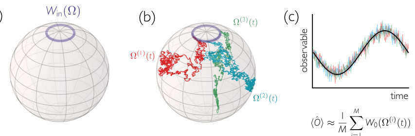
<figcaption class="paper-figure-caption"><b>Fig 1.</b> FIG. 1. Truncated Wigner approximation: The method consists on (a) obtaining the probability distribu- tion for the initial state, Win(Ω); (b) sampling this initial distribution to generate initial conditions and evolving them using the SDE system that describes the approximated dynamics; and (c) computing expectation values ⟨ˆO⟩by statistically averaging the phase-space representation of ˆO, WO(Ω), over M different realizations.</figcaption>
</figure>
<figure class="paper-figure-card">
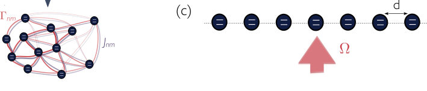
<figcaption class="paper-figure-caption"><b>Fig 2.</b> FIG. 2. Spin model for many-body quantum optics. (a) An ensemble of atoms in contact with a Markovian electromagnetic environment can be described as an open spin model by integrating out the electromagnetic degrees of freedom. The field effectively mediates coherent and dissipative interactions among the atoms. Examples of typical systems include: (b) Atoms decaying at rate Γc into a “bad” cavity, while being subjected to incoherent pumping and parasitic decay with rates w and Γ′, respectively. (c) Atoms in free space arranged in a 1D array with lattice constant d subjected to identical coherent pumping with Rabi frequency Ω.</figcaption>
</figure>
<figure class="paper-figure-card">
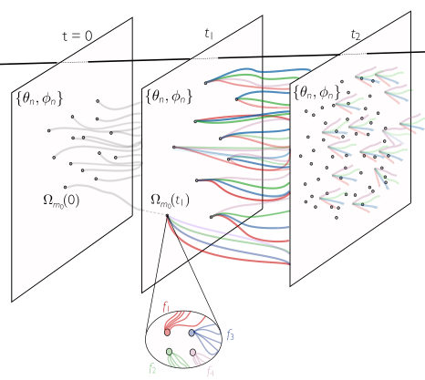
<figcaption class="paper-figure-caption"><b>Fig 3.</b> FIG. 3. Schematic representation of the calculation of multi-time correlation functions. A set of M0 samples from the initial distribution, Ωm0(0), is evolved to time t1. Using the kernel of the discrete representation of a spin, the auxiliary operator is sampled. Since there are four kernel operators, each trajectory generates four distinct types of new initial conditions. These new initial conditions are then evolved up to time t2, and the process is iteratively repeated until reaching the final time tK.</figcaption>
</figure>
<figure class="paper-figure-card">
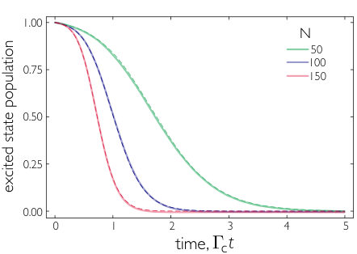
<figcaption class="paper-figure-caption"><b>Fig 4.</b> FIG. 4. Dicke superradiance in a cavity: (a) Normalized total excited population P</figcaption>
</figure>
<figure class="paper-figure-card">
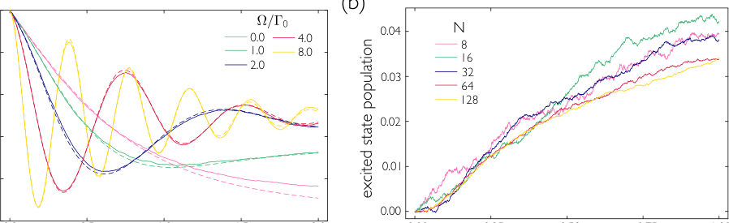
<figcaption class="paper-figure-caption"><b>Fig 5.</b> FIG. 5. Dissipative TWA evolution for a coherently driven 1D atomic array in free space. (a)Excited state population P n ⟨ˆσn ee⟩/N for a 1D array of N = 5 atoms in free space with d/λ0 = 0.1, polarization perpendicular to the chain, and different Rabi frequencies, calculated exactly by solving the master equation (dashed lines) and using the dissipative TWA (solid lines) with M0 = 1000 trajectories. (b) Evolution of excited state population if the system is initially in the ground state and Ω= 0, computed with the dissipative TWA and M0 = 1000 trajectories.</figcaption>
</figure>
</div>

<p><strong>Summary.</strong> This paper reviews phase-space methods for tackling the dynamics of complex many-body quantum optical systems where exact simulations are intractable. It details how techniques like the Truncated Wigner Approximation (TWA) allow researchers to simulate dissipative evolution by mapping quantum mechanics onto solvable partial differential equations. The development broadens simulation capabilities to include coherence and spectral properties crucial for understanding advanced light sources.</p>
<p><strong>Why it may be interesting.</strong> This work directly addresses the computational bottleneck in simulating open quantum systems central to modern quantum optics research (e.g., cavity QED, atomic arrays), providing necessary theoretical tools for analyzing collective dissipation effects.</p>
<details>
<summary>Detailed structure</summary>
<p><strong>Main problem.</strong> Developing computationally efficient methods to simulate the complex, out-of-equilibrium dynamics of many-body quantum optical systems.</p>
<p><strong>Main result.</strong> The paper provides a comprehensive overview of phase-space techniques, deriving the exact PDE for dissipative evolution and extending the formalism to calculate multi-time correlation functions.</p>
<p><strong>Method.</strong> It utilizes semiclassical phase-space approaches, such as the Truncated Wigner Approximation (TWA) and its extensions, which map quantum dynamics onto partial differential equations solvable via stochastic methods.</p>
<p><strong>Model / system.</strong> The focus is on many-body quantum-optical systems involving ensembles of emitters (atoms, qubits) interacting through a common electromagnetic reservoir. This includes modeling open spin systems and bosonic modes.</p>
<p><strong>Key observables.</strong> Multi-time correlation functions, coherence properties, spectral properties, directional correlations, and dynamics related to superradiance/subradiance.</p>
<p><strong>Important parameters / regimes.</strong> The complexity scales exponentially with system size, necessitating approximations like TWA; the choice of phase-space representation (P, Q) is critical.</p>
<p><strong>Assumptions / limitations.</strong> The primary approximation discussed is the Truncated Wigner Approximation (TWA), which treats subsequent evolution classically after initial sampling from a quasiprobability distribution. P and Q distributions are noted as generally suboptimal.</p>
<p><strong>Figures summary.</strong> Not specified, but the notes describe Figure 1 illustrating the TWA process: obtaining an initial probability distribution, evolving via SDEs through sampling, and calculating expectation values via statistical averaging.</p>
<p><strong>Paper structure.</strong> The paper is structured as a comprehensive overview, starting with the necessity of phase-space methods due to Hilbert space size limitations. It derives the exact PDE, discusses approximations like TWA, and extends the formalism for advanced calculations like multi-time correlations.</p>
</details>
<details>
<summary>Abstract</summary>
<p>Many-body quantum-optical systems, where a collection of emitters interacts through a common electromagnetic reservoir, exhibit rich out-of-equilibrium behavior and hold promise for applications in quantum technologies. However, exact numerical simulations of their dynamics quickly become unfeasible due to the exponential growth of the Hilbert space with system size. Semiclassical, phase-space approaches -- such as the Truncated Wigner approximation (TWA) -- provide computationally efficient alternatives by capturing leading-order quantum fluctuations. In this paper, we present a comprehensive overview of how to tackle problems in many-body quantum optics using phase-space methods. We derive the exact partial differential equation governing many-body dissipative evolution in any phase-space representation and discuss the approximations that yield the dissipative TWA proposed by Mink and Fleischhauer [SciPost Phys. 15, 233 (2023)]. We find that $P$ and $Q$ distributions are generally suboptimal for many-body quantum optics. Additionally, we extend the formalism to calculate multi-time correlation functions, thereby broadening the scope of phase-space simulations of open spin systems to include coherence and spectral properties, as well as directional correlations of collectively radiating emitters. These developments provide valuable tools for investigating exotic light sources driven by collective dissipation, driven-dissipative phase transitions, and a wealth of many-body phenomena arising in state-of-the-art experimental platforms.</p>
</details>
<p><sub><a href="#top">↑ back to top</a></sub></p>

<p><a id="paper-2608.01617"></a></p>
<h3 id="near-optimal-quantum-metrology-with-few-qubit-measurements">⭐ <a href="http://arxiv.org/abs/2608.01617v1">Near-optimal quantum metrology with few-qubit measurements</a></h3>
<p><strong>Highlighted author(s):</strong> John Preskill<br>
<strong>Authors:</strong> Liang Mao, Senrui Chen, Hsin-Yuan Huang, John Preskill, Sisi Zhou<br>
<strong>Type:</strong> theory · <strong>Category:</strong> quantum information and computing · <strong>PDF:</strong> <a href="https://arxiv.org/pdf/2608.01617v1">https://arxiv.org/pdf/2608.01617v1</a><br>
<strong>Analysis basis:</strong> full PDF text, analyzed in chunks
<strong>Topic relevance:</strong> 🔥 <code>quantum measurements</code> <strong>4/5</strong> · <code>entanglement &amp; information structure</code> <strong>1/5</strong> · <code>measurement-induced transitions</code> <strong>1/5</strong></p>
<div class="figure-strip-hint">↔ Scroll figures horizontally</div>
<div class="paper-figures-scroll">
<figure class="paper-figure-card">
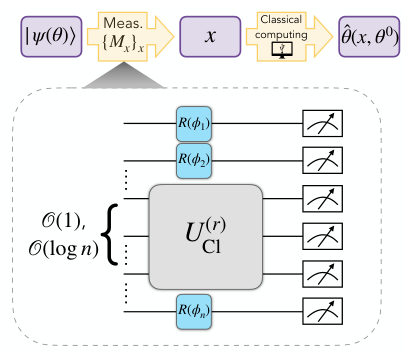
<figcaption class="paper-figure-caption"><b>Fig 1.</b> FIG. 1. Schematic illustration of quantum metrology and our measurement protocol. (a) In quantum metrology, a POVM {Mx}x is performed on the state |ψ(θ)⟩. Upon the outcome x, classical computer builds an estimator ˆθ. In quantum metrol- ogy, one typically has access to a prior estimate θ0 that is close to the true value θ. (b) In our protocol, the POVM acts locally on n−r qubits and as a random Clifford measurement on r qubits. Throughout the protocols introduced this work, r is at most O(log n). In most cases, r = 1 is sufficient.</figcaption>
</figure>
<figure class="paper-figure-card">
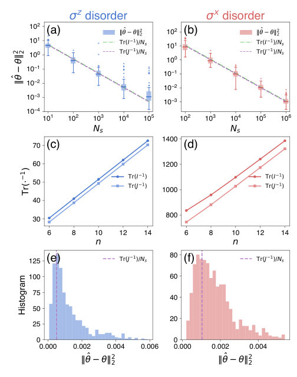
<figcaption class="paper-figure-caption"><b>Fig 2.</b> FIG. 2. Parameter estimation for disordered transverse-field Ising model with σz or σx disorder, using the POVM from Theorem 2 and the estimator from Eq. (14). (a)(b) Total MSE versus measurement number Ns for a typical random choice of θz,x at n = 10. Box plots summarize the statistical distribution of the data over 100 independent experiments. The central line of the box represents the median, while the lower and upper edges indicate the first quartile and third quartile. Whiskers extend to the most extreme data points within 2 times the interquartile range from the quartiles. In- dividual points outside the whiskers are shown as outliers. Numerical calculation shows 4τ(θ0) ≈113.8 when n...</figcaption>
</figure>
</div>

<p><strong>Summary.</strong> This paper introduces new quantum metrology protocols designed to estimate parameters in multi-qubit systems while drastically reducing the complexity of required quantum measurements. By establishing a link between state certification and parameter estimation, they show that few-qubit measurements can achieve near-optimal precision relative to the ultimate QFI bound. This is highly relevant for building practical, resource-efficient quantum sensors.</p>
<p><strong>Why it may be interesting.</strong> This work provides concrete, resource-efficient measurement strategies that bridge the gap between theoretical quantum limits (QFI) and practical experimental feasibility using limited local measurements, which is crucial for designing real quantum sensors.</p>
<details>
<summary>Detailed structure</summary>
<p><strong>Main problem.</strong> To develop quantum metrology protocols that estimate unknown parameters encoded in a quantum state using only physically feasible few-qubit measurements.</p>
<p><strong>Main result.</strong> The authors establish a universal connection between quantum state certification and metrology, achieving near-optimal precision approaching the Quantum Cramér-Rao Bound with measurement overhead scaling favorably (constant for Haar random states).</p>
<p><strong>Method.</strong> They transform protocols based on Conditional Fidelity Estimation (CFE) from state certification into metrological estimation frameworks using specific POVMs derived from few-qubit measurements.</p>
<p><strong>Model / system.</strong> The study analyzes parameter estimation for parameterized pure quantum states $|\psi(	heta)
angle$ in a multi-qubit Hilbert space, exemplified by Hamiltonian estimation problems.</p>
<p><strong>Key observables.</strong> Mean Squared Error Matrix (MSEM), Quantum Fisher Information (QFI), and the Certification Gap ($\Delta$).</p>
<p><strong>Important parameters / regimes.</strong> Number of qubits ($n$), number of parameters ($m$), and measurement overhead scaling factors ($\mathcal{O}(n)$ or constant).</p>
<p><strong>Assumptions / limitations.</strong> The protocols rely on establishing bounds derived from state certification techniques, particularly for Haar-random states.</p>
<p><strong>Figures summary.</strong> Figures schematically illustrate the comparison between general quantum metrology POVMs and the proposed few-qubit measurement protocols; other figures show scaling of MSE vs. measurement number or CFI/QFI traces vs. system size $n$.</p>
<p><strong>Paper structure.</strong> The paper builds by first defining the problem using QCRB, then introducing CFE as a link to metrology (Lemma 1), and finally deriving specific bounds for non-adaptive (Markov chain mixing time) and adaptive (Decision Tree) measurements, culminating in results for Haar random states.</p>
</details>
<details>
<summary>Abstract</summary>
<p>Quantum metrology, which addresses parameter estimation in quantum systems, has broad applications across science and technology. Conventional metrology protocols for multi-qubit states in the multi-parameter regime typically require highly complex quantum measurements, leading to substantial quantum-resource costs. In this work, we introduce a family of metrology protocols that use only few-qubit measurements, thereby significantly reducing the required resources. For arbitrary pure states, one of our protocols approaches the quantum Cramér-Rao bound up to an overhead in sample complexity that scales linearly with the number of qubits, irrespective of the number of parameters to be estimated. For typical Haar-random states, this overhead can be reduced to a constant. Our results build on recent advances in quantum state certification protocols with few-qubit measurements: we establish a universal connection between certification and metrology in which the precision of the certification protocol determines the metrological overhead. We also illustrate our approach through an example of Hamiltonian estimation from ground states.</p>
</details>
<p><sub><a href="#top">↑ back to top</a></sub></p>

<p><a id="paper-2608.00171"></a></p>
<h3 id="fault-tolerant-heisenberg-limited-quantum-sensing">⭐ <a href="http://arxiv.org/abs/2608.00171v1">Fault-Tolerant Heisenberg-Limited Quantum Sensing</a></h3>
<p><strong>Highlighted author(s):</strong> Alexey V. Gorshkov<br>
<strong>Authors:</strong> Lorcan O. Conlon, Yu-Xin Wang, Erfan Abbasgholinejad, Victor V. Albert, Michael J. Gullans, Alexey V. Gorshkov<br>
<strong>Type:</strong> theory · <strong>Category:</strong> quantum information and computing · <strong>PDF:</strong> <a href="https://arxiv.org/pdf/2608.00171v1">https://arxiv.org/pdf/2608.00171v1</a><br>
<strong>Analysis basis:</strong> full PDF text, analyzed in chunks
<strong>Topic relevance:</strong> <code>correlated / nonlocal dissipation</code> <strong>1/5</strong> · <code>entanglement &amp; information structure</code> <strong>1/5</strong> · <code>methods for driven-dissipative</code> <strong>1/5</strong> · <code>quantum measurements</code> <strong>1/5</strong></p>
<div class="figure-strip-hint">↔ Scroll figures horizontally</div>
<div class="paper-figures-scroll">
<figure class="paper-figure-card">
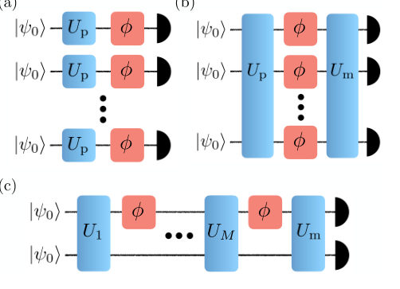
<figcaption class="paper-figure-caption"><b>Fig 1.</b> FIG. 1: Hierarchy of sensing protocols. (a) Separa- ble sensing, where each quantum channel encoding the parameter of interest ϕ, represented by the red box, is probed with a separable state. Up represents a unitary preparing some quantum state and |ψ0⟩may include an- cilla qubits. Given N uses of the same channel, the vari- ance in estimating ϕ will scale as σ2 ϕ ≥1/N. (b) En- tangled sensing where Up acts across all N qubits (and possibly ancillas) to prepare some optimal (potentially entangled) state for sensing ϕ. An optimal measurement across all N qubits (and possibly ancillas) is performed, represented by Um, and Heisenberg scaling is achieved σ2 ϕ ≥1/N 2. (c) M sequential uses of...</figcaption>
</figure>
<figure class="paper-figure-card">
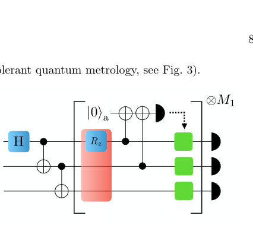
<figcaption class="paper-figure-caption"><b>Fig 2.</b> FIG. 2: Ideal error-corrected sensing with a three- qubit repetition code. In the ideal setting, errors oc- cur only in the quantum channel, shown as a red box and all other operations are assumed to be perfect. The green boxes denote a correction operation that depends on the syndrome measurement outcomes. For simplicity the syndrome measurement Z2Z3 is not shown.</figcaption>
</figure>
<figure class="paper-figure-card">
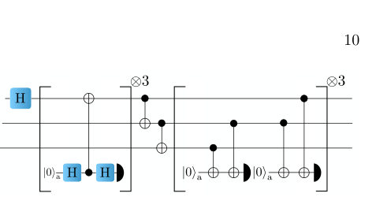
<figcaption class="paper-figure-caption"><b>Fig 3.</b> FIG. 4: Fault-tolerant state preparation. Syndrome measurements are used to detect X and Z errors. The corresponding correction operations are not shown for simplicity. See appendix B 3 for details.</figcaption>
</figure>
<figure class="paper-figure-card">
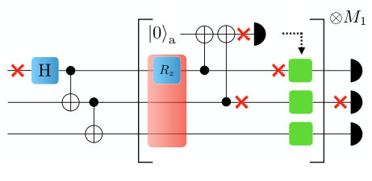
<figcaption class="paper-figure-caption"><b>Fig 4.</b> FIG. 3: Naive sensing protocol failures. Crosses mark parts of the quantum circuit where a single physi- cal error can cause a standard quantum-error-correction- assisted quantum metrology protocol to fail completely. Only some error locations are shown. The circuit re- quired to implement the final measurement is not shown explicitly.</figcaption>
</figure>
<figure class="paper-figure-card">
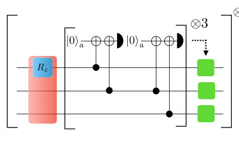
<figcaption class="paper-figure-caption"><b>Fig 5.</b> FIG. 5: Fault-tolerant syndrome extraction and error correction. Syndrome measurements are used to detect X errors that occur either during the natural evolution of the quantum state or during the correction process. The dashed arrow denotes a classical decoding process informing the appropriate correction operation shown in green. More detail on the decoding process is provided in appendix B 4.</figcaption>
</figure>
</div>

<p><strong>Summary.</strong> This paper addresses the fragility of high-precision quantum sensing in the presence of noise by importing fault-tolerance concepts from quantum computing. It demonstrates that under a specific restricted error model, Heisenberg scaling—the ultimate sensitivity limit—can be maintained for extended sensing times using simple repetition codes. This shows a pathway to robust quantum measurements beyond current theoretical limitations.</p>
<p><strong>Why it may be interesting.</strong> This work directly bridges two major fields: quantum metrology and quantum error correction. For AMO physicists studying open quantum systems, it provides a concrete theoretical framework for how robust sensing protocols can be engineered using QEC principles against realistic noise channels.</p>
<details>
<summary>Detailed structure</summary>
<p><strong>Main problem.</strong> The primary challenge is achieving quantum advantage in sensing by reaching the Heisenberg limit while mitigating noise effects that typically degrade entanglement-enhanced protocols.</p>
<p><strong>Main result.</strong> Under a restricted qubit noise model, the authors demonstrate that Heisenberg scaling can be maintained for sensing times up to $T\propto 1/p^{(N+1)/2}$ using a simple repetition code, surpassing the naive error scaling.</p>
<p><strong>Method.</strong> The work adapts concepts from fault-tolerant quantum computing (QEC) to metrology, analyzing how specific noise structures allow for the restoration of Heisenberg scaling through encoding and recovery operations.</p>
<p><strong>Model / system.</strong> The system involves $N$ qubits used as sensors estimating a phase $\phi$. The analysis compares ideal sensing limits (SQL vs. HL) against noisy evolution governed by error probabilities ($p$) and utilizes repetition codes derived from QEC theory.</p>
<p><strong>Key observables.</strong> Estimation error ($\sigma_\phi$), Visibility, Fisher Information (CFI/QFI), and the scaling of achievable time $T$.</p>
<p><strong>Important parameters / regimes.</strong> Error probability $p$, number of qubits $N$, sensing time $T$, and the structure of the noise model.</p>
<p><strong>Assumptions / limitations.</strong> The analysis relies on a specific, restricted qubit noise model where phase-flip errors are exponentially smaller than bit-flip errors. It also assumes the applicability of fault-tolerance ideas derived from quantum computing.</p>
<p><strong>Figures summary.</strong> Figure 1 illustrates three sensing protocols: separable ($\sigma_\phi \propto 1/\sqrt{N}$), entangled ($\sigma_\phi \propto 1/N$), and sequential uses ($\sigma_\phi \propto 1/N$).</p>
<p><strong>Paper structure.</strong> The paper progresses from establishing the theoretical limits of quantum sensing (SQL vs. HL) to identifying how noise degrades these enhancements, culminating in proposing fault-tolerance techniques derived from quantum computing to restore Heisenberg scaling under specific error assumptions.</p>
</details>
<details>
<summary>Abstract</summary>
<p>Quantum sensors hold great promise for achieving better sensitivity in the measurement of physical quantities compared to their classical counterparts. However, the conditions under which quantum advantage in sensing can be achieved are rather restrictive, and most quantum enhancements in sensing are lost in the presence of noise, errors, or a poorly calibrated system. To overcome these limitations, we are motivated to import ideas from fault-tolerant quantum computing to quantum sensing. Specifically, we consider a qubit noise model where the probability of phase-flip errors is exponentially smaller (in qubit number) compared to the probability of bit-flip errors that occur with probability $p$. For this noise structure, we demonstrate that, given a total sensing time $T$, Heisenberg scaling can be attained for times up to $T\propto 1/p^{(N+1)/2}$ for a $N$-qubit repetition code, in contrast with $T\propto 1/p$ without using a fault-tolerant sensing protocol.</p>
</details>
<p><sub><a href="#top">↑ back to top</a></sub></p>

<p><a id="paper-2608.00706"></a></p>
<h3 id="non-hermitian-dynamics-in-a-driven-dissipative-and-spatially-correlated-light-matter-system"><a href="http://arxiv.org/abs/2608.00706v1">Non-Hermitian dynamics in a driven-dissipative and spatially correlated light-matter system</a></h3>
<p><strong>Authors:</strong> Ruiyang Huang, Eliott Beraud, Antoine Glicenstein, Simon Bernon<br>
<strong>Type:</strong> both · <strong>Category:</strong> other · <strong>PDF:</strong> <a href="https://arxiv.org/pdf/2608.00706v1">https://arxiv.org/pdf/2608.00706v1</a><br>
<strong>Analysis basis:</strong> full PDF text, analyzed in chunks
<strong>Topic relevance:</strong> 🔥 <code>methods for driven-dissipative</code> <strong>5/5</strong> · 🔥 <code>analog quantum simulation</code> <strong>4/5</strong> · 🔥 <code>driven-dissipative phase transition</code> <strong>4/5</strong> · <code>Tavis-Cummings &amp; cavity-many-emitter</code> <strong>3/5</strong> · <code>interference shaping light</code> <strong>3/5</strong> · <code>non-equilibrium universality</code> <strong>3/5</strong> · <code>Keldysh / 2PI / non-Gaussian methods</code> <strong>2/5</strong> · <code>correlated cavity matter</code> <strong>2/5</strong> · <code>non-equilibrium dynamics</code> <strong>2/5</strong> · <code>quantum optics experiment</code> <strong>2/5</strong> · <code>Kondo &amp; dissipative impurity</code> <strong>1/5</strong> · <code>correlated / nonlocal dissipation</code> <strong>1/5</strong> · <code>entanglement &amp; information structure</code> <strong>1/5</strong> · <code>measurement-induced transitions</code> <strong>1/5</strong> · <code>quantum measurements</code> <strong>1/5</strong></p>
<div class="figure-strip-hint">↔ Scroll figures horizontally</div>
<div class="paper-figures-scroll">
<figure class="paper-figure-card">
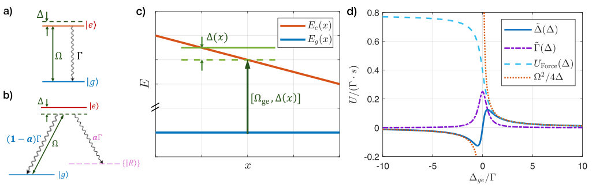
<figcaption class="paper-figure-caption"><b>Fig 1.</b> FIG. 1. a) Schematic of level structure of 2-level system; b) Schematic of general Raman decay, where part of the atoms decays to a collection of reservoir states; c) Schematic of the excited state engineering with linearly spatial-modulated detuning; d) The dressed ground state potential as a function of detuning, corresponding to Schematic C.</figcaption>
</figure>
<figure class="paper-figure-card">
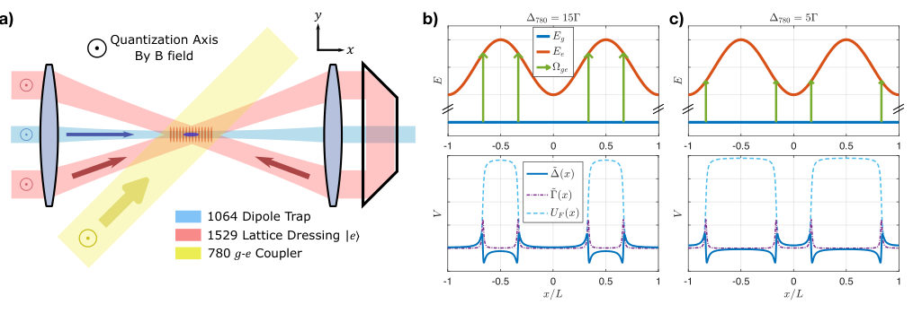
<figcaption class="paper-figure-caption"><b>Fig 2.</b> FIG. 2. (a) Optical setup for excited-state engineering. All laser polarizations are aligned with the magnetic field which defines the quantization axis. (b,c) Effective level scheme for periodic excited-state engineering and the corresponding dressing potential Veff, with ∆780 = 15Γ or 5Γ for Ve = 20Γ.</figcaption>
</figure>
<figure class="paper-figure-card">
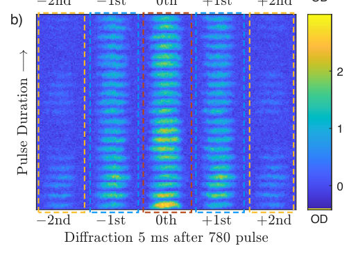
<figcaption class="paper-figure-caption"><b>Fig 3.</b> FIG. 3. Examples of experimental diffraction patterns versus pulse duration T (scanned increments of ∆T = 5 µs, starting from T = 10 µs at the bottom). (a) s780 = 0.034, ∆780 = 15Γ, approaching a steady state; (b) s780 = 0.169, ∆780 = 15Γ, exhibiting persistent oscillations. Red, blue and yellow boxes represent respectively the integration zones of the 0th, 1st and 2nd diffraction orders.</figcaption>
</figure>
<figure class="paper-figure-card">
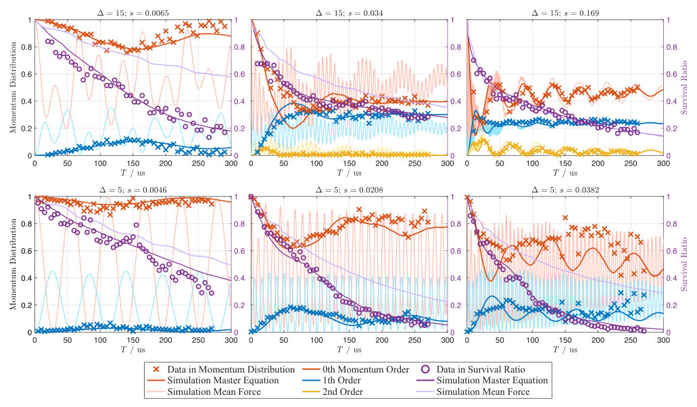
<figcaption class="paper-figure-caption"><b>Fig 4.</b> FIG. 4. Time evolution of the momentum distribution for selected saturation parameters and detunings. Set of parameters are specified above each sub-figure. Experimental diffraction data (markers) are compared with numerical predictions from the mean-force model (light curves) and the effective non-Hermitian master-equation model (solid curves). Red, blue and yellow crosses represent respectively the 0th, 1st and 2nd diffraction order population. Purple circle represent the survival ratio which is presented to the right axis. The same color code is used for the corresponding curves of the two theoretical models. For non-zero momentum orders, data are the average of orders with opposite sign.</figcaption>
</figure>
<figure class="paper-figure-card">
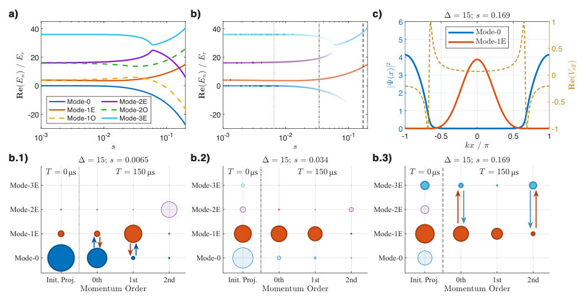
<figcaption class="paper-figure-caption"><b>Fig 5.</b> FIG. 5. Mode analysis for ∆780 = 15Γ: a) Re(En) of eigen modes in the Bloch basis; b) The dominant modes during diffraction indicated by transparency, based on the product of initial projection and remaining fraction at T = 150 µs; c) The examples of eigen wavefunction for Mode-1E (ground trapping state) and Mode-0 (anti-trapping state) for s = 0.169; b.1-3) The projection from the Bloch basis onto the free-space momentum, counted at the 3 saturation values indicated on b). The arrows note the momentum order pairs under Rabi oscillation.</figcaption>
</figure>
</div>

<p><strong>Summary.</strong> This work establishes a unified theoretical framework for analyzing how dissipation affects quantum dynamics in light-matter interactions. By deriving an effective complex potential from the master equation, the authors successfully model near-resonant behavior that fails perturbative treatments. The theory is validated by comparing predictions to matter-wave diffraction experiments on $^{87}	ext{Rb}$ BECs.</p>
<p><strong>Why it may be interesting.</strong> It provides a rigorous, non-perturbative method to analyze open quantum systems in cold atoms, connecting fundamental concepts like exceptional points and dissipation directly to measurable physical phenomena like momentum-space interference patterns.</p>
<details>
<summary>Detailed structure</summary>
<p><strong>Main problem.</strong> To develop a unified theoretical framework for studying non-Hermitian dynamics in driven-dissipative light-matter systems, especially where standard perturbative methods fail near resonance.</p>
<p><strong>Main result.</strong> The derived formalism successfully models the interplay between coherent drive and dissipation, experimentally showing a reduced decay rate with increasing drive strength.</p>
<p><strong>Method.</strong> The study combines theoretical derivations from the Lindblad master equation approach with numerical simulations (e.g., quantum jump algorithm) and comparison to matter-wave diffraction experiments using $^{87}	ext{Rb}$ BECs.</p>
<p><strong>Model / system.</strong> The system is an atomic ensemble modeled as two-level systems interacting with a laser field, governed by a master equation that incorporates dissipation ($\Gamma$) and coherent driving ($\Omega$).</p>
<p><strong>Key observables.</strong> Effective complex potential $V_{	ext{eff}}(\Omega, \Delta)$, matter-wave diffraction patterns, ground state level shift ($E_g$), and the repumped atom number $N(\Delta_{780})$.</p>
<p><strong>Important parameters / regimes.</strong> Detuning ($\Delta$), Rabi frequency ($\Omega$), decay rate ($\Gamma$), and control parameters defining the light-matter interaction strength.</p>
<p><strong>Assumptions / limitations.</strong> The analysis moves beyond mean-force formalisms which assume thermal particles, incorporating spatial correlations via non-commutativity $[\hat{
ho}, \hat{\Delta}] 
eq 0$.</p>
<p><strong>Figures summary.</strong> Figures illustrate the level structure and excited state engineering; one figure shows the measured atom number $N(\Delta_{780})$ vs. detuning $\Delta_{780}$, which is used to calibrate the effective potential.</p>
<p><strong>Paper structure.</strong> The paper progresses from establishing the master equation description for non-Hermitian dynamics, contrasting it with inadequate mean-force approximations, deriving effective potentials ($V_{	ext{eff}}$), and finally validating these theoretical predictions against experimental matter-wave diffraction data.</p>
</details>
<details>
<summary>Abstract</summary>
<p>Pure quantum states, as described in quantum mechanics textbooks, are ideal representations inevitably deteriorated in real systems by any dissipative connection to the environment. In this work we derive a unified theoretical frame to study the non-Hermitian dynamics of a driven-dissipative quantum system and validate it by comparison to experimental data of matter-wave diffraction. To highlight the role of dissipation, we perform the comparison in a near-resonant regime of light-matter interaction, where perturbative approaches fail. Here, we show that the developed formalism enables both exact simulations and an intuitive interpretation based on modal analysis. The theoretical analysis is based on the general master equation description of driven-dissipative systems, from which we derive an effective complex potential $V_\mathrm{eff}(Ω,Δ)$ that depends on control parameters such as the amplitude and detuning of the light matter interaction. Experimentally, we drive a $^{87}$Rb BEC near resonance using periodic excited-state engineering, mapping the spatially modulated $V_{\rm eff}[Ω,Δ(x)]$ into momentum space for precise quantification. The experimental results agree with numerical simulations of the master equation and demonstrate the interplay between coherent drive and dissipation, with an exceptional signature: a reduced decay rate with increasing drive. Such dynamics is then interpreted by a modal analysis of the non-Hermitian Hamiltonian $H_\mathrm{eff}=p^2/2m+V_\mathrm{eff}$ which provide an intuitive and qualitative explanation for such driven-dissipative system.</p>
</details>
<p><sub><a href="#top">↑ back to top</a></sub></p>

<p><a id="paper-2608.00162"></a></p>
<h3 id="realization-of-a-quantum-topological-photon-pump"><a href="http://arxiv.org/abs/2608.00162v1">Realization of a Quantum Topological Photon Pump</a></h3>
<p><strong>Authors:</strong> Qianao Yue, Bernardo Barrera, Martin Ritter, David M. Long, David A. Lane, Anushya Chandran, Alicia J. Kollár<br>
<strong>Type:</strong> experiment · <strong>Category:</strong> other · <strong>PDF:</strong> <a href="https://arxiv.org/pdf/2608.00162v1">https://arxiv.org/pdf/2608.00162v1</a><br>
<strong>Analysis basis:</strong> full PDF text, analyzed in chunks
<strong>Topic relevance:</strong> 🔥 <code>quantum optics experiment</code> <strong>5/5</strong> · 🔥 <code>analog quantum simulation</code> <strong>4/5</strong> · <code>correlated cavity matter</code> <strong>3/5</strong> · <code>driven-dissipative phase transition</code> <strong>3/5</strong> · <code>QC/QI experiment</code> <strong>2/5</strong> · <code>methods for driven-dissipative</code> <strong>2/5</strong> · <code>non-equilibrium universality</code> <strong>2/5</strong> · <code>Tavis-Cummings &amp; cavity-many-emitter</code> <strong>1/5</strong> · <code>correlated / nonlocal dissipation</code> <strong>1/5</strong> · <code>entanglement &amp; information structure</code> <strong>1/5</strong> · <code>exotic spin models in light-matter</code> <strong>1/5</strong> · <code>interference shaping light</code> <strong>1/5</strong> · <code>non-equilibrium dynamics</code> <strong>1/5</strong> · <code>quantum measurements</code> <strong>1/5</strong></p>
<div class="figure-strip-hint">↔ Scroll figures horizontally</div>
<div class="paper-figures-scroll">
<figure class="paper-figure-card">
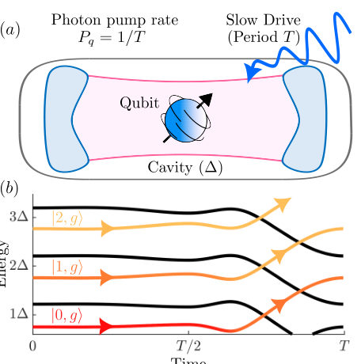
<figcaption class="paper-figure-caption"><b>Fig 1.</b> Figure 1. The Topological Photon Pump. (a) A coupled qubit- cavity system is periodically driven by a slow external drive with period T. One photon enters the cavity per cycle, so that the average pump rate Pq = 1/T. (b) The instantaneous spectrum vs time, showing spectral flow. Along each colored line, an n-photon state |n, g⟩is adiabatically transported one rung up the eigenstate ladder to an (n + 1)-photon state |n + 1, g⟩in one period; over multiple periods, the number of photons increases from n = 0 to n = nmax. The black lines correspond to depumping states.</figcaption>
</figure>
<figure class="paper-figure-card">
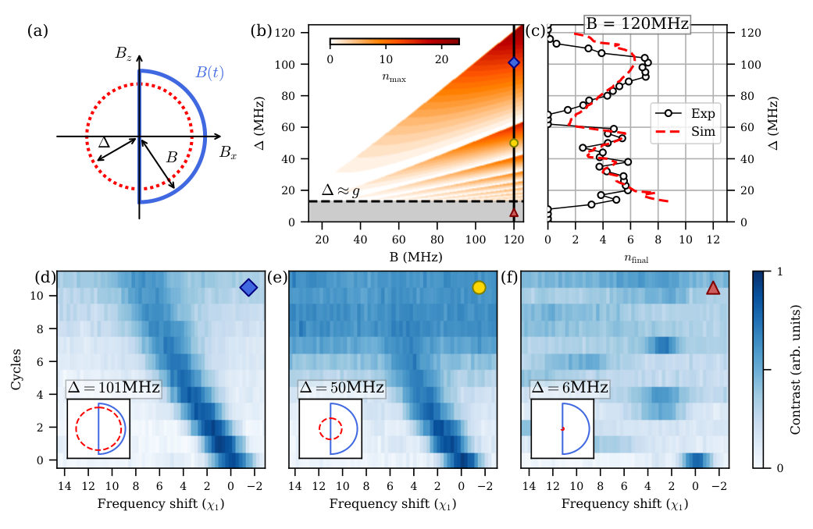
<figcaption class="paper-figure-caption"><b>Fig 2.</b> Figure 2. Phase Diagram of the Topological Pump. (a) Schematic of the effective time-dependent field ⃗B(t) (blue) relative to the ring | ⃗B(t)| = ∆. (b) The analytically computed maximum photon number nmax (color) as a function of B and ∆for g = 13 MHz, neglecting cavity loss. The resonances at ∆ℓ, where nmax = 0 separate large regions of robust pumping, with the largest values of nmax ≈20 found in the range ∆2 &lt; ∆&lt; ∆1 (blue diamond). Panels (c-f) show data along the black line B = 120 MHz. (c) Experimentally achieved largest photon number nfinal over 11 cycles (circles) and numerically simulated values accounting for cavity decay (red dashed line) versus detuning at B = 120 MHz (black line...</figcaption>
</figure>
<figure class="paper-figure-card">
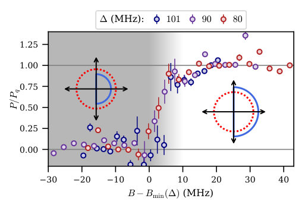
<figcaption class="paper-figure-caption"><b>Fig 3.</b> Figure 3. Quantization of Pump Rate. Photon pump rate P/Pq extracted from the first five cycles versus B for ∆= 101, 90, 80 MHz and ω = 5 MHz. Error bars indicate the uncertainty of the fit to n(mT) = (P/κ) × (1 −e−κmT ). We observe P ≈0 for B &lt; Bmin(∆) (gray shaded region) in the trivial regime, and P/Pq ≈1 deep in the topological regime B &gt; Bmin(∆) + 10 MHz. Insets show the drive protocols in the two regimes. Sample spectroscopy data corresponding to ∆= 80 MHz are shown in Fig. S9 of the Supplemental Materials.</figcaption>
</figure>
<figure class="paper-figure-card">
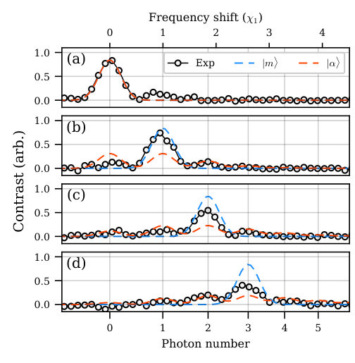
<figcaption class="paper-figure-caption"><b>Fig 4.</b> Figure 4. Fock-State Pumping. (a-d) Photon-number-resolved qubit spectroscopy after m = 0-3 pump cycles, showing exper- imental data (white circles), coherent-state distributions with |α|2 = m (red), and ideal m-photon Fock states (blue). The upper (lower) axis indicates integer multiples of the single- photon shift χ1 (the exact qubit frequency shifts corresponding to m photons). Despite cavity decay, the measured photon- number distributions retain strong overlap with the 1, 2, and 3-photon Fock states.</figcaption>
</figure>
</div>

<p><strong>Summary.</strong> The research reports the first experimental realization of a topological photon pump using a superconducting transmon qubit coupled to a microwave cavity. By controlling external fields to induce spectral flow, the system pumps photons into the cavity at a rate quantized by fundamental band topology. This achievement allows for the robust preparation of non-classical quantum states, which is crucial for quantum computing and communication protocols.</p>
<p><strong>Why it may be interesting.</strong> This work is highly relevant as it combines topological concepts from condensed matter theory with cutting-edge quantum optics experiments in cavity QED. Demonstrating a robust, topologically protected process for generating non-classical light sources is a major advance for quantum information applications.</p>
<details>
<summary>Detailed structure</summary>
<p><strong>Main problem.</strong> The primary goal was the experimental observation of a topological photon pump, which transfers photons into a quantum cavity at a rate quantized by band topology.</p>
<p><strong>Main result.</strong> The authors successfully demonstrated this process using a superconducting transmon qubit coupled to a microwave cavity, observing quantized pumping rates and generating demonstrably non-classical (sub-Poissonian) cavity states.</p>
<p><strong>Method.</strong> The experiment utilized circuit QED spectroscopy, measuring the AC Stark shift on the qubit as a function of the photon number in the cavity to infer the pump rate and final state population.</p>
<p><strong>Model / system.</strong> The physical system is a superconducting transmon qubit coupled to a microwave cavity. The dynamics are governed by an effective Hamiltonian derived from the Jaynes-Cummings model, where pumping relies on spectral flow induced by time-varying external fields (detuning $\Delta$ and magnetic field $\vec{B}(t)$).</p>
<p><strong>Key observables.</strong> Quantized photon pump rate ($P/P_q \approx 1$), maximum observable photon number ($\langle n 
angle \approx 7$), and sub-Poissonian photon statistics.</p>
<p><strong>Important parameters / regimes.</strong> The process requires operating in specific parameter regimes defined by inequalities (e.g., $\kappa \ll \omega < g \ll \Delta, B$) to ensure adiabatic evolution.</p>
<p><strong>Assumptions / limitations.</strong> Key assumptions include the validity of the adiabatic approximation and the ability to maintain a hierarchy of energy scales throughout the pumping cycle.</p>
<p><strong>Figures summary.</strong> Figures illustrate the spectral flow mechanism (pumping vs. depumping), phase diagrams showing $n_{	ext{max}}$ dependence on control parameters, and spectroscopy plots confirming photon number resolution via AC Stark shifts.</p>
<p><strong>Paper structure.</strong> The paper details the theoretical framework based on spectral flow, presents the experimental setup using circuit QED, describes the measurement protocol involving adiabatic evolution and subsequent qubit spectroscopy to resolve $n$, and finally reports quantitative measurements of quantized pumping rates and state preparation fidelity.</p>
</details>
<details>
<summary>Abstract</summary>
<p>Topological pumps transfer charge or energy at quantized rates determined solely by band topology, independent of the details of the control fields. Photon pumps operating on this principle could enable the robust preparation of non-classical states in a quantum cavity, even in the presence of control imperfections, but have not been directly observed. We present the first experimental observation of a topological photon pump, using a transmon qubit coupled to a microwave cavity. The pump operates in the quantum regime, pumping up from the vacuum state up to $\approx 7$ photons, and produces demonstrably non-classical cavity states for the first few cycles.</p>
</details>
<p><sub><a href="#top">↑ back to top</a></sub></p>

<p><a id="paper-2608.01832"></a></p>
<h3 id="reinforcement-learned-electric-field-sensing-with-asymmetrically-blockaded-rydberg-arrays"><a href="http://arxiv.org/abs/2608.01832v1">Reinforcement-Learned Electric-Field Sensing with Asymmetrically Blockaded Rydberg Arrays</a></h3>
<p><strong>Authors:</strong> Shi-Qiang Qiao, Xue-Ke Song, Shi-Lei Su, Liu Ye, Dong Wang<br>
<strong>Type:</strong> theory · <strong>Category:</strong> other · <strong>PDF:</strong> <a href="https://arxiv.org/pdf/2608.01832v1">https://arxiv.org/pdf/2608.01832v1</a><br>
<strong>Analysis basis:</strong> full PDF text, analyzed in chunks
<strong>Topic relevance:</strong> 🔥 <code>Rydberg arrays</code> <strong>5/5</strong> · 🔥 <code>analog quantum simulation</code> <strong>4/5</strong> · <code>quantum measurements</code> <strong>2/5</strong> · <code>correlated cavity matter</code> <strong>1/5</strong> · <code>entanglement &amp; information structure</code> <strong>1/5</strong> · <code>methods for driven-dissipative</code> <strong>1/5</strong> · <code>non-equilibrium dynamics</code> <strong>1/5</strong></p>
<div class="figure-strip-hint">↔ Scroll figures horizontally</div>
<div class="paper-figures-scroll">
<figure class="paper-figure-card">
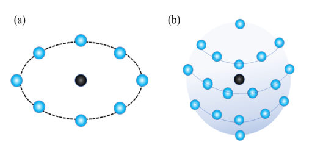
<figcaption class="paper-figure-caption"><b>Fig 1.</b> FIG. 1. Sensor geometries considered in this work. A central control atom (black) is surrounded by target atoms (blue). (a) Planar circular array used for scalar electric-field sensing. (b) Spherical array used for vector sensing. Microwave dressing is designed to suppress target-target interactions while retaining field-sensitive control-target interactions.</figcaption>
</figure>
<figure class="paper-figure-card">
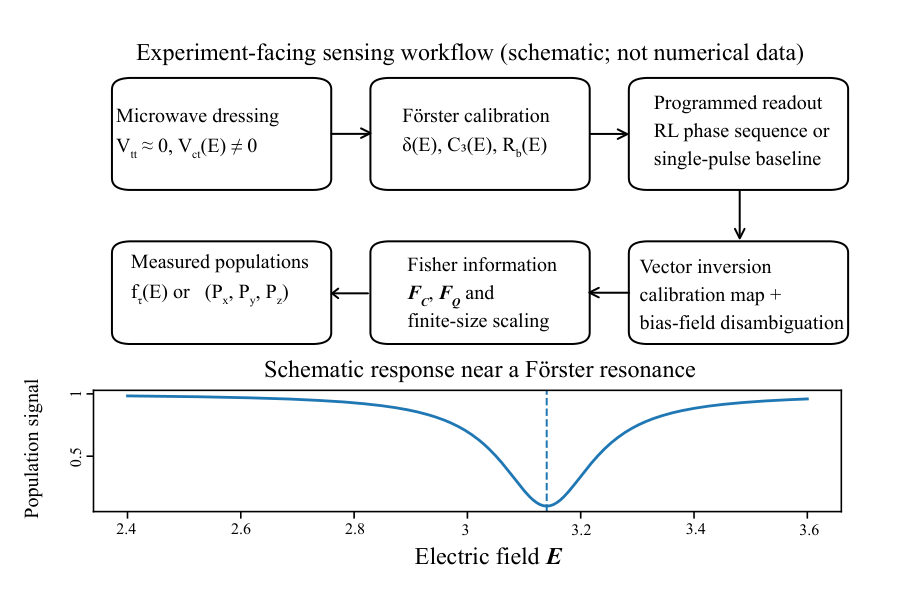
<figcaption class="paper-figure-caption"><b>Fig 2.</b> FIG. 2. Experiment-facing workflow of the proposed protocol. Microwave dressing first prepares an asymmetric blockade configuration, the Förster response is calibrated through δ(E) and C3(E), and the final population readout is performed either with a single-pulse baseline or with an RL-optimized phase sequence. The lower curve is a qualitative schematic of a population dip near resonance and is not numerical data.</figcaption>
</figure>
<figure class="paper-figure-card">
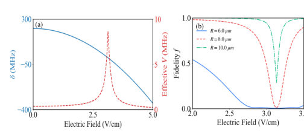
<figcaption class="paper-figure-caption"><b>Fig 3.</b> FIG. 3. (a) Calculated Förster response. The blue curve shows the energy defect δ(E) between the relevant pair states. The red dashed curve shows the corresponding effective inter- action magnitude calculated from Eq. (3) for the transverse orientation used in the planar-array simulations. (b) Full- excitation probability fτ as a function of the electric field for three control-target separations. A sharp dip appears near Eres ≃3.14 V/cm, where the blockade radius is largest.</figcaption>
</figure>
<figure class="paper-figure-card">
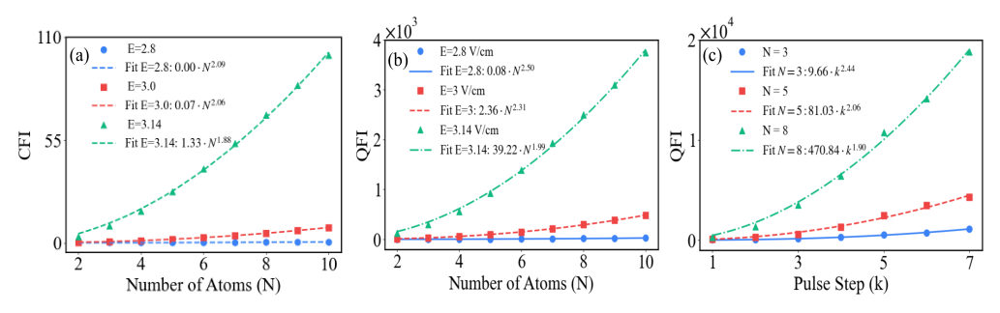
<figcaption class="paper-figure-caption"><b>Fig 4.</b> FIG. 4. (a) CFI FC of the binary full-excitation measurement as a function of total atom number N. Power-law fits over the simulated finite-size window yield FC ∝N b with b ≃2.09, 2.06, and 1.88. (b) QFI versus total atom number for three electric fields. The displayed power-law exponents are fits to the simulated values and should not be interpreted as asymptotic scaling laws. (c) Maximum QFI obtained by RL-optimized composite pulses as a function of pulse number k for several atom numbers. Power-law fits over the displayed finite range give FQ ∝kγ with γ ≃2.44, 2.06, and 1.90.</figcaption>
</figure>
<figure class="paper-figure-card">
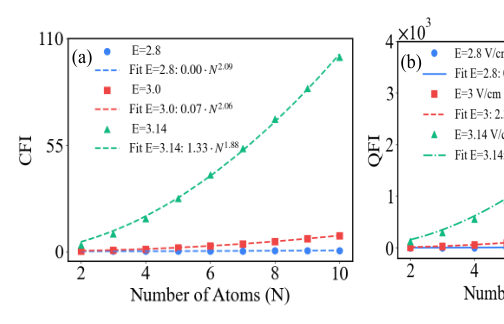
<figcaption class="paper-figure-caption"><b>Fig 5.</b> Fig. 3(b) shows the calculated fτ as a function of the elec- tric field E for the circular array with N = 5 (one control plus four targets) and R = 6.0, 8.0, 10.0µm. When E is far from the Förster resonance (Eres ≈3.14 V/cm), the interatomic interaction is weak, the blockade radius Rb is smaller than the atomic spacing R, and the target atoms can be excited nearly independently; consequently, fτ approaches unity. As E approaches Eres, Rb increases dramatically, and the excitation of the central control atom blocks the excitation of all target atoms, causing fτ to drop sharply to nearly zero, forming a distinct res- onance dip. After passing through the resonance, Rb decreases again and fτ...</figcaption>
</figure>
</div>

<p><strong>Summary.</strong> The authors present a method for ultra-sensitive electric field measurement using Rydberg atom arrays by exploiting the sharp, field-dependent change in interatomic interactions near a Förster resonance. They enhance sensitivity through Reinforcement Learning optimized pulse sequences and demonstrate full 3D vector field reconstruction using a minimal spherical atomic arrangement.</p>
<p><strong>Why it may be interesting.</strong> This work represents a sophisticated application of quantum control (RL) to an established AMO platform (Rydberg atoms). The combination of blockade physics with metrology enhancement provides a highly advanced blueprint for quantum sensing.</p>
<details>
<summary>Detailed structure</summary>
<p><strong>Main problem.</strong> The goal is to achieve high-precision, quantum-enhanced electric field sensing using Rydberg arrays, extending capability from scalar magnitude measurement to full 3D vector reconstruction.</p>
<p><strong>Main result.</strong> The scheme demonstrates superlinear scaling of the Quantum Fisher Information (QFI) with atom number and enables full vector electrometry using a compact six-atom spherical configuration.</p>
<p><strong>Method.</strong> The approach combines microwave dressing to induce an asymmetric blockade, utilizing the strong field dependence of interatomic interactions near a Förster resonance, and optimizing pulse sequences via Reinforcement Learning (RL).</p>
<p><strong>Model / system.</strong> The physical system is Rydberg atoms in planar or spherical arrays. The dynamics are modeled using a Hamiltonian incorporating control-target interactions ($V_{1,j}$) whose strength depends critically on the external electric field $\mathbf{E}$ near resonance.</p>
<p><strong>Key observables.</strong> Electric field ($\mathbf{E}$), blockade radius dependence on $\mathbf{E}$, Classical Fisher Information ($ ext{CFI}$), and Quantum Fisher Information ($  ext{QFI}$).</p>
<p><strong>Important parameters / regimes.</strong> Förster resonance energy ($E_{	ext{res}} \approx 3.14 	ext{ V/cm}$), atom number ($N$), and the scaling exponents for $    ext{QFI} \propto N^b$ (where $b \approx 2$).</p>
<p><strong>Assumptions / limitations.</strong> The primary Hamiltonian initially ignores residual target-target couplings, though the method is shown to be robust against various noise sources.</p>
<p><strong>Figures summary.</strong> Figures illustrate sensor geometries (planar/spherical), the workflow combining dressing, Förster calibration, RL optimization, and vector inversion. Figure 3 shows the critical population dip $f_	au(\mathbf{E})$ near resonance.</p>
<p><strong>Paper structure.</strong> The paper details the physical mechanism using microwave dressing to achieve asymmetric blockade; it quantifies sensitivity using $    ext{CFI}$ and $ ext{QFI}$; it introduces RL optimization for pulse enhancement; finally, it extends the concept to a spherical array for full vector reconstruction.</p>
</details>
<details>
<summary>Abstract</summary>
<p>We present a reinforcement learning-optimized Rydberg electrometer based on the asymmetric blockade effect and achieve high-sensitivity electric field sensing in Rydberg arrays. Microwave dressing induces asymmetric blockade to suppress interactions between target atoms, while keeping the coupling between the central control atom and target atoms field-tunable near Förster resonance. The field-regulated blockade radius affects the detectable atomic population signals, thereby enabling electric field sensing via state-selective readout. In planar atomic arrays, classical Fisher information exhibits near-quadratic scaling with atom number and approaches the Heisenberg limit. Reinforcement learning-designed composite pulses greatly enhance quantum Fisher information by up to one order of magnitude compared with single $π$ pulses. We further establish a compact six-atom spherical configuration for vector electrometry, in which field orientation is extracted from calibrated axial populations, and weak bias fields eliminate dipole-dipole-induced sign and magic-angle ambiguities. Numerical tests against Rabi frequency deviation, positional error, residual inter-target coupling and projection noise demonstrate the reliability of this scheme. This work provides an experimentally viable approach to realize high-precision three-dimensional Rydberg electric field sensing.</p>
</details>
<p><sub><a href="#top">↑ back to top</a></sub></p>

<p><a id="paper-2608.01741"></a></p>
<h3 id="robust-nonclassical-magnon-pair-generation-and-cauchy-schwarz-inequality-violation-in-a-hybrid-electromagnonic-system"><a href="http://arxiv.org/abs/2608.01741v1">Robust Nonclassical magnon pair generation and Cauchy-Schwarz inequality violation in a hybrid electromagnonic system</a></h3>
<p><strong>Authors:</strong> Sabur A Barbhuiya, Ajeet Kumar, Amarendra K Sarma<br>
<strong>Type:</strong> theory · <strong>Category:</strong> other · <strong>PDF:</strong> <a href="https://arxiv.org/pdf/2608.01741v1">https://arxiv.org/pdf/2608.01741v1</a><br>
<strong>Analysis basis:</strong> full PDF text, analyzed in chunks
<strong>Topic relevance:</strong> 🔥 <code>methods for driven-dissipative</code> <strong>4/5</strong> · 🔥 <code>spintronics-quantum-optics interface</code> <strong>4/5</strong> · <code>analog quantum simulation</code> <strong>3/5</strong> · <code>correlated / nonlocal dissipation</code> <strong>3/5</strong> · <code>driven-dissipative phase transition</code> <strong>3/5</strong> · <code>entanglement &amp; information structure</code> <strong>3/5</strong> · <code>exotic spin models in light-matter</code> <strong>3/5</strong> · <code>interference shaping light</code> <strong>3/5</strong> · <code>Keldysh / 2PI / non-Gaussian methods</code> <strong>2/5</strong> · <code>Tavis-Cummings &amp; cavity-many-emitter</code> <strong>2/5</strong> · <code>correlated cavity matter</code> <strong>2/5</strong> · <code>non-equilibrium dynamics</code> <strong>2/5</strong> · <code>non-equilibrium universality</code> <strong>2/5</strong> · <code>quantum measurements</code> <strong>1/5</strong></p>
<div class="figure-strip-hint">↔ Scroll figures horizontally</div>
<div class="paper-figures-scroll">
<figure class="paper-figure-card">
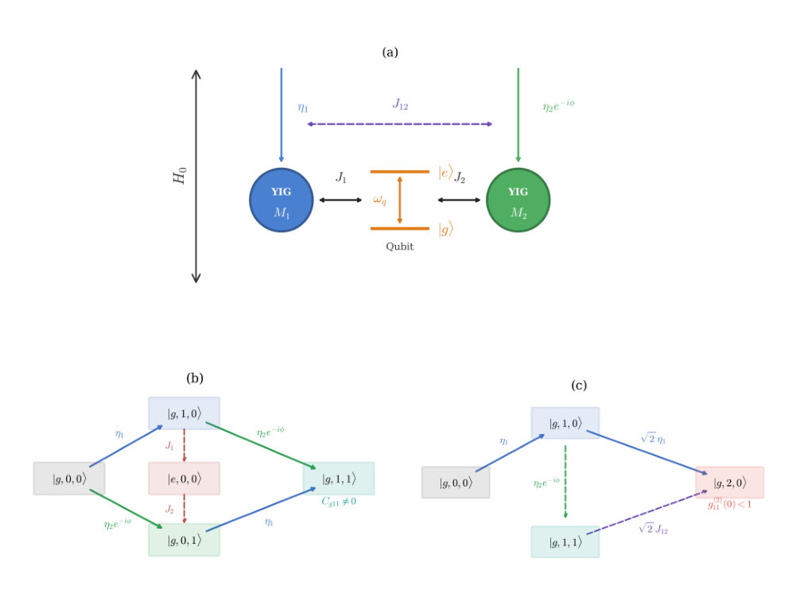
<figcaption class="paper-figure-caption"><b>Fig 1.</b> FIG. 1. Hybrid magnon–qubit system and the interference mechanism underlying the two-magnon blockade. (a) Effective-model configuration [Eq. (3)] which is obtained after adiabatic elimination of the microwave cavity. Two Kittel magnon modes M1 and M2 and a superconducting qubit (whose transition frequency isωq) are directly coupled by the cavity-induced interactions such as magnon–qubit couplings J1 and J2 and an effective magnon–magnon coupling J12. A static field H0 sets the magnon frequencies and the two modes are driven by η1 and η2e−iϕ with ϕ is the relative drive phase. (b) Excitation pathways to the cross-mode two-magnon state |g, 1, 1⟩. The two direct-drive paths (solid) each...</figcaption>
</figure>
<figure class="paper-figure-card">
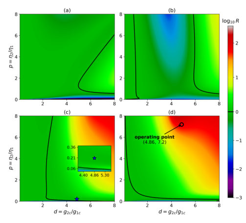
<figcaption class="paper-figure-caption"><b>Fig 2.</b> FIG. 2. Two-dimensional colour maps of the CSI violation factor R, on a log10 scale as functions of the coupling ratio d = g2c/g1c and the drive ratio p = η2/η1 at (a) ϕ = 0, (b) ϕ = π/2, (c) ϕ = π and (d) the operating phase ϕ∗= 1.183π. The white curve is the R = 1 contour separating the classical region from the CSI-violating one and the black line on the colour bar marks log10 R = 0. Also, the white circle in (d) marks the operating point (d, p) = (4.86, 7.2) where R = 73.4. The white star in (c) and the region enlarged in the inset mark the classical reference point (d, p) = (4.86, 0.206) at which R = 1 at ϕ = π. All the system parameters are taken from Refs. [16, 28, 42, 49, 50]: γ1 =...</figcaption>
</figure>
<figure class="paper-figure-card">

<figcaption class="paper-figure-caption"><b>Fig 3.</b> FIG. 3. Cavity-detuning dependence of the two-mode magnon blockade and the CSI violation at the drive ratio p = η2/η1 = 7.2. (a) Violation factor R on a log10 scale versus the cavity– drive detuning ∆c and the coupling ratio d = g2c/J1c at fixed ϕ = π. Three contours partition in the plane: the classical bound R = 1 (white solid) and the antibunching boundaries g(2) 11 (0) = 1 (black dashed) and g(2) 22 (0) = 1 (black dotted) above which the respective Kittel mode is antibunched. The dark band marks |∆c| &lt; 3gq where the dispersive Hamilto- nian of Eq. (3) is not reliably valid and the white dashed lines mark the operating detuning |∆c| = 5gq = 945 and the cir- cle is the operating point...</figcaption>
</figure>
<figure class="paper-figure-card">
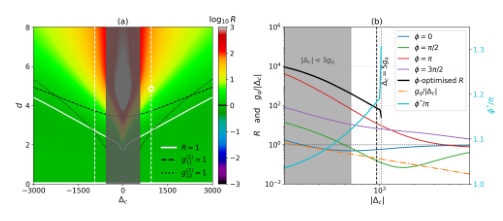
<figcaption class="paper-figure-caption"><b>Fig 4.</b> Fig. 3 establishes the detuning range where Eq. (3) re- mains valid and quantifies the violation cost of operating deeper within it. Since all derived parameters scale as 1/∆c we exclude |∆c| &lt; 3gq and operate at |∆c| = 5gq where the expansion parameter is gq/|∆c| = 0.200. The color map in Fig. 5(a) is symmetric about ∆c = 0 which arises from conjugating Eqs. (A2)–(A9) whose collapse operators are real and the first drive has ϕ1 = 0 which gives the relation R(∆c, d, ϕ) = R(−∆c, d, −ϕ) that re- duces to origin symmetry at ϕ = π. We have verified this numerically to zero deviation and hence we discuss only |∆c|. The violation is extensive in R &gt; 1 which is over 60.8% of the scanned plane. The...</figcaption>
</figure>
<figure class="paper-figure-card">
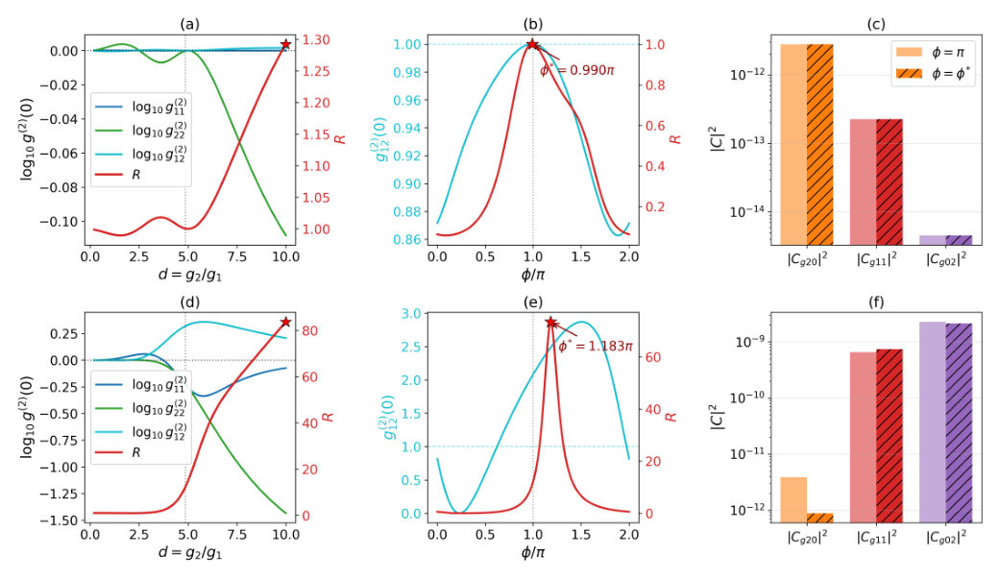
<figcaption class="paper-figure-caption"><b>Fig 5.</b> FIG. 4. Top row, p = η2/η1 = 0.2; bottom row, p = 7.2. (a),(d) The normalised correlations g(2) 11 (0), g(2) 22 (0), g(2) 12 (0) (left axis, log10) and the violation factor R (right axis) as functions of the coupling ratio d, at fixed relative phase ϕ = π; the grey dotted line marks the operating value d = 4.86 and the star marks the largest R within the scanned range 0.2 ≤d ≤10. (b),(e) g(2) 12 (0) (left) and R (right) as functions of the relative phase ϕ at d = 4.86; the grey dotted line marks the control phase ϕ = π, and in (e) the star marks the numerically located maximum at ϕ∗= 1.183π. (c),(f) The two-magnon amplitudes |Cg20|2, |Cg11|2, |Cg02|2 at the operating coupling ratio which...</figcaption>
</figure>
</div>

<p><strong>Summary.</strong> The paper investigates generating nonclassical magnon pairs in a hybrid electromagnonic circuit by controlling the relative phase of external microwave drives. By tuning this phase, researchers can actively restore destructive interference pathways that suppress single-mode excitations while enhancing cross-mode correlations. This control mechanism allows for robust demonstration of quantum phenomena, such as violating the Cauchy-Schwarz inequality, paving the way for phase-controlled magnonic quantum information processing.</p>
<p><strong>Why it may be interesting.</strong> This work directly addresses quantum control in coupled bosonic systems (magnons), using external driving fields ($\phi$) as a knob to switch between classical and highly correlated quantum regimes, which is central to quantum optics and open quantum system research.</p>
<details>
<summary>Detailed structure</summary>
<p><strong>Main problem.</strong> The study aims to achieve robust nonclassical magnon pair generation and demonstrate violation of the Cauchy-Schwarz inequality by actively controlling quantum interference in a hybrid electromagnonic system.</p>
<p><strong>Main result.</strong> The relative drive phase acts as a dynamic control knob, enabling the simultaneous achievement of strong blockade and unambiguous violation of the macroscopic CSI ($R \gg 1$).</p>
<p><strong>Method.</strong> The dynamics are analyzed using numerical solutions to the Lindblad master equation, supplemented by perturbative expansions in coupling strengths.</p>
<p><strong>Model / system.</strong> The system is a tripartite hybrid quantum setup involving two Kittel magnon modes ($    ext{M}_1,   ext{M}_2$) coupled via a common microwave cavity bus and mediated by a superconducting qubit. The effective Hamiltonian is derived after adiabatically eliminating the cavity mode.</p>
<p><strong>Key observables.</strong> Second-order autocorrelation functions ($g^{(2)}_{aa}(0)$) and the Cauchy-Schwarz inequality violation factor ($R = g^{(2)}_{12}(0)/\sqrt{g^{(2)}_{11}(0)g^{(2)}_{22}(0)}$).</p>
<p><strong>Important parameters / regimes.</strong> The relative drive phase ($\phi$) is the key control parameter, alongside coupling ratios and detunings.</p>
<p><strong>Assumptions / limitations.</strong> The analysis relies on operating in the large detuning (dispersive) limit to adiabatically eliminate the cavity mode, which was validated by comparing effective vs. exact dynamics.</p>
<p><strong>Figures summary.</strong> Figures illustrate how varying the drive phase ($\phi$) controls interference pathways, leading to high values of $R$ (up to 73.4) at optimal phases like $\phi^* \simeq 1.18\pi$.</p>
<p><strong>Paper structure.</strong> The paper first establishes the model and uses perturbative methods to derive amplitudes ($C_{g...}$) showing phase dependence, then numerically solves the master equation to quantify nonclassicality via $R$, and finally validates the effective Hamiltonian approach against exact time evolution.</p>
</details>
<details>
<summary>Abstract</summary>
<p>Magnonic systems are a promising resource for quantum technologies because of their ability to couple significantly disparate quantum platforms and the generation of nonclassical magnon states through magnon blockade has attracted growing attention. In practice, however magnon blockade relies on a destructive interference that is easily spoiled by fabrication-induced coupling asymmetries. Here we show that the relative phase between two magnon drives acts as an active compensation knob that restores this interference even when the couplings are mismatched. We study two Kittel magnon modes in a hybrid system in which a superconducting qubit coupled to a common cavity mode mediates the inter-mode interaction and we find that tuning the drive phase produces both magnon blockade and a strong violation of the classical Cauchy--Schwarz inequality. We derive the analytic condition for the phase that compensates a given coupling asymmetry and confirm it against exact numerical simulations. The drive phase thereby serves as a control knob that switches the system between classical and quantum regimes. Our results enable phase-controlled magnonic quantum information processing.</p>
</details>
<p><sub><a href="#top">↑ back to top</a></sub></p>

<p><a id="paper-2608.01788"></a></p>
<h3 id="validation-and-calibration-of-quantum-hardware-through-the-many-body-quantum-mpemba-effect"><a href="http://arxiv.org/abs/2608.01788v1">Validation and calibration of quantum hardware through the many-body quantum Mpemba effect</a></h3>
<p><strong>Authors:</strong> Francesco Campaioli, Marco Avesani, Oren Raz, Roderich Moessner, Gianluca Teza<br>
<strong>Type:</strong> experiment · <strong>Category:</strong> other · <strong>PDF:</strong> <a href="https://arxiv.org/pdf/2608.01788v1">https://arxiv.org/pdf/2608.01788v1</a><br>
<strong>Analysis basis:</strong> full PDF text, analyzed in chunks
<strong>Topic relevance:</strong> 🔥 <code>QC/QI experiment</code> <strong>4/5</strong> · 🔥 <code>analog quantum simulation</code> <strong>4/5</strong> · <code>correlated / nonlocal dissipation</code> <strong>3/5</strong> · <code>driven-dissipative phase transition</code> <strong>3/5</strong> · <code>methods for driven-dissipative</code> <strong>3/5</strong> · <code>non-equilibrium dynamics</code> <strong>3/5</strong> · <code>entanglement &amp; information structure</code> <strong>2/5</strong> · <code>non-equilibrium universality</code> <strong>2/5</strong> · <code>Keldysh / 2PI / non-Gaussian methods</code> <strong>1/5</strong> · <code>Rydberg arrays</code> <strong>1/5</strong> · <code>quantum measurements</code> <strong>1/5</strong> · <code>scars &amp; prethermalization</code> <strong>1/5</strong></p>
<div class="figure-strip-hint">↔ Scroll figures horizontally</div>
<div class="paper-figures-scroll">
<figure class="paper-figure-card">
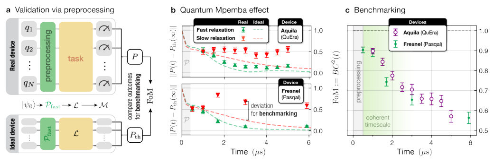
<figcaption class="paper-figure-caption"><b>Fig 1.</b> FIG. 1. Overview of validation routine. a, A register of N qubits qi, initialized in a state |ψ0⟩on a real device, undergoes a preprocessing sequence designed to accelerate (Pfast, green) or decelerate (Pslow, red) the relaxation dynamics induced by noise for a given task L. After the task is executed, the qubits are measured via a process M. The resulting measurement outcomes P from the real device are compared against simulated outcomes Pth (ideal device) to benchmark device performance; deviations are attributed to hardware imperfections and systematic errors. b, Measurement outcomes showing fast and slow relaxation towards the equilibrium configuration, obtained on two neutral-atom...</figcaption>
</figure>
<figure class="paper-figure-card">
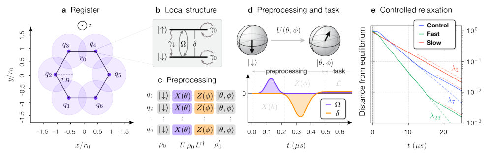
<figcaption class="paper-figure-caption"><b>Fig 2.</b> FIG. 2. Implementation of validation routine on Rydberg atom devices. a, We program a registers of six Rydberg atoms, arranged in a reproducible and exactly-solvable hexagonal layout with lattice spacing r0, forming a ring of 6 qubits (qi) on the xy-plane of the device trap. Ising interactions between atoms pairs (i, j) depend on distance r−6 ij [34, 35], as in Eq. (1). The shaded area around the atoms represents the blockade radius rB, which is a measure of the interaction range. b, Atoms are controlled by programmable transverse and longitudinal fields via globally addressed coupling strength Ωand δ, respectively, as shown in Eq. (1). The atoms undergo device-dependent local relaxation...</figcaption>
</figure>
<figure class="paper-figure-card">
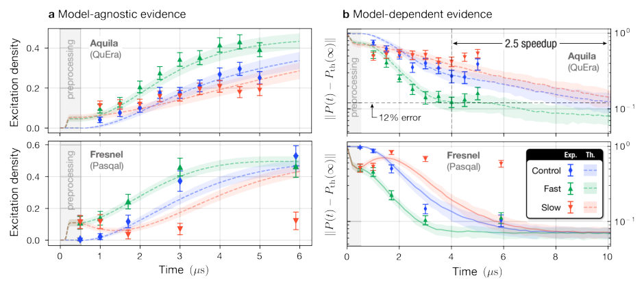
<figcaption class="paper-figure-caption"><b>Fig 3.</b> FIG. 3. Evidence of many-body quantum Mpemba effect. Model-agnostic evidence of the QME shown in panel a, by the dynamics of the excitation density n(t), i.e., the average number of excitations per atom on QuEra’s Aquila (top) and Pasqal’s machine Fresnel (botton). Model-dependent evidence of the QME is show in panel b, the dynamics of the distance from the equilibrium configuration ∥P(t) −Pth(∞)∥, where P(t) is the measured configuration vector at time t and Pth(∞) is the equilibrium configuration vector obtained from theory. Data points are obtained from 200 shots on each device; in a error bars represent the standard deviation, while in b they are obtained via bootstrapping, drawing 200...</figcaption>
</figure>
<figure class="paper-figure-card">
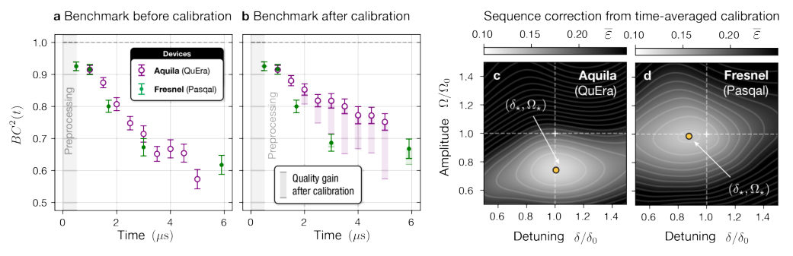
<figcaption class="paper-figure-caption"><b>Fig 4.</b> FIG. 4. Benchmark and sequence corrections from calibration. a, Benchmark score of the Aquila (QuEra) and Fresnel (Pasqal) at each keyframe averaged over control, fast, and slow sequences. Error bars denote one standard deviation from bootstrapping. b, Benchmark scores after time-resolved calibration. Vertical shaded regions indicate the quality gain achieved through calibration. The modest improvement obtained on Fresnel highlights the stringency of the benchmark test, with the slow preprocessing sequence proving the most challenging to reproduce. Heatmap of the time-averaged error landscapes ε(δ, Ω) defined in Eq. (10) on Aquila (c) and Fresnel (d), shown as a function of the deviations...</figcaption>
</figure>
<figure class="paper-figure-card">
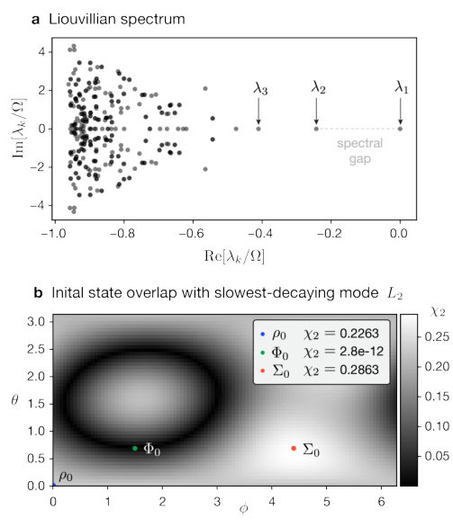
<figcaption class="paper-figure-caption"><b>Fig 5.</b> FIG. 5. Tuning relaxation by controlling the overlap with the slowest-decaying mode. a, The first 350 ele- ments of the spectrum {λk}d k=1 of the Liouville superoperator L associated with the Hamiltonian of Eq. (1), with N = 6, Ω= 0.584, δ = 0.866, C6/r6 0 = 0.866, γ0 = 0.222, γ↓= 0.01, plotted in the complex plane relative to the system’s trans- verse field amplitude Ω. b, Overlap χ2(θ, ϕ) between the pre- processed initial state ρ′ 0(θ, ϕ) and the slowest decaying mode L2 for N = 6. The fiducial initial state ρ0 = |↓⟩⟨↓|⊗N and the slow-decaying state Σ0 have a significant overlap χ2 &gt; 0.2, while the fast-decaying state Φ0 has an almost vanishing over- lap χ2 = 2.81 · 10−12. Note that Φ0...</figcaption>
</figure>
</div>

<p><strong>Summary.</strong> The paper presents a novel method to validate and calibrate programmable quantum processors using the many-body quantum Mpemba effect. By engineering fast and slow relaxation pathways in neutral-atom systems, the authors create a stringent benchmark that quantifies hardware imperfections directly from system dynamics. This establishes relaxation as a powerful, transferable tool for improving quantum hardware fidelity.</p>
<p><strong>Why it may be interesting.</strong> This work directly addresses hardware characterization in AMO platforms (neutral atoms) by linking fundamental non-equilibrium physics (Mpemba effect) to practical quantum control engineering, providing actionable feedback for device improvement.</p>
<details>
<summary>Detailed structure</summary>
<p><strong>Main problem.</strong> To develop a validation and calibration process for quantum hardware that is more accurate and scalable than existing benchmarks.</p>
<p><strong>Main result.</strong> The authors establish many-body relaxation, specifically utilizing the quantum Mpemba effect, as a transferable tool to benchmark and calibrate programmable quantum processors.</p>
<p><strong>Method.</strong> They introduce a preprocessing sequence ($P$) before running a target task ($L$), allowing direct measurement of extremal dynamical modes governing the open system's relaxation dynamics.</p>
<p><strong>Model / system.</strong> The experiments are performed on neutral-atom processors (e.g., QuEra's Aquila and Pasqal's Fresnel) trapping Rubidium atoms, modeled as open many-body systems evolving under a Lindblad master equation.</p>
<p><strong>Key observables.</strong> Figure of Merit ($ ext{FoM}$), Bhattacharyya coefficient ($  ext{BC}_2$), relaxation trajectories (fast vs. slow decay rates), and excitation density $n(t)$.</p>
<p><strong>Important parameters / regimes.</strong> The initial state engineering controls the fast and slow relaxation pathways; performance is benchmarked against theoretical predictions.</p>
<p><strong>Assumptions / limitations.</strong> Current validation methods are limited by exponential scaling for full tomography, necessitating reliance on specific dynamical benchmarks like convergence to equilibrium.</p>
<p><strong>Figures summary.</strong> Figures illustrate the overall validation routine (Initial state $
ightarrow$ Preprocessing $
ightarrow$ Task execution) and show model-dependent evidence of the quantum Mpemba effect signature across different preprocessing regimes on both hardware platforms.</p>
<p><strong>Paper structure.</strong> The paper introduces the concept by detailing the methodology using two independent neutral-atom processors, demonstrating the fast/slow relaxation pathways via the Mpemba effect, quantifying performance with a Figure of Merit, and concluding that this process serves as a general calibration tool.</p>
</details>
<details>
<summary>Abstract</summary>
<p>We introduce a validation process that harnesses engineered many-body relaxation to control and calibrate quantum hardware. On two independently developed neutral-atom processors, we realize the many-body quantum Mpemba effect in an open system for the first time. Initial-state engineering creates fast and slow relaxation pathways: the fast pathway opens access to unreachable mixed-state physics before hardware noise obscures the target dynamics, whereas the slow pathway amplifies hidden imperfections in preparation and control. Computational-basis measurements directly and independently benchmark dynamical reliability, revealing each processor's actual operating window as a many-body simulator. The processors are thus judged by the very dynamics they are built to reproduce. Complementary responses disentangle control errors and drive an adaptive, time-resolved scheme that supplies hardware developers directly actionable corrections, enhancing faithful reproduction of the target dynamics. These results establish many-body relaxation as a transferable validation and calibration tool for programmable quantum processors.</p>
</details>
<p><sub><a href="#top">↑ back to top</a></sub></p>

<p><a id="paper-2608.02521"></a></p>
<h3 id="squeezing-fueled-quantum-otto-engine-via-measurement-induced-cooling-the-two-qubit-quantum-rabi-model"><a href="http://arxiv.org/abs/2608.02521v1">Squeezing-Fueled Quantum Otto Engine via Measurement-Induced Cooling: The Two-Qubit Quantum Rabi Model</a></h3>
<p><strong>Authors:</strong> S R Rathnakaran, Asoka Biswas<br>
<strong>Type:</strong> theory · <strong>Category:</strong> other · <strong>PDF:</strong> <a href="https://arxiv.org/pdf/2608.02521v1">https://arxiv.org/pdf/2608.02521v1</a><br>
<strong>Analysis basis:</strong> full PDF text, analyzed in chunks
<strong>Topic relevance:</strong> 🔥 <code>measurement-induced transitions</code> <strong>4/5</strong> · <code>analog quantum simulation</code> <strong>3/5</strong> · <code>correlated cavity matter</code> <strong>3/5</strong> · <code>quantum measurements</code> <strong>3/5</strong> · <code>Tavis-Cummings &amp; cavity-many-emitter</code> <strong>2/5</strong> · <code>driven-dissipative phase transition</code> <strong>2/5</strong> · <code>entanglement &amp; information structure</code> <strong>2/5</strong> · <code>methods for driven-dissipative</code> <strong>2/5</strong> · <code>non-equilibrium dynamics</code> <strong>2/5</strong> · <code>Keldysh / 2PI / non-Gaussian methods</code> <strong>1/5</strong> · <code>correlated / nonlocal dissipation</code> <strong>1/5</strong> · <code>non-equilibrium universality</code> <strong>1/5</strong> · <code>quantum optics experiment</code> <strong>1/5</strong></p>
<div class="figure-strip-hint">↔ Scroll figures horizontally</div>
<div class="paper-figures-scroll">
<figure class="paper-figure-card">
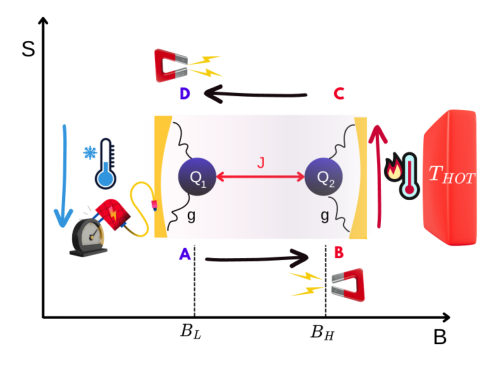
<figcaption class="paper-figure-caption"><b>Fig 1.</b> FIG. 1: Quantum Otto cycle dynamics comprising of two coupled qubits interacting with a common cavity.</figcaption>
</figure>
<figure class="paper-figure-card">
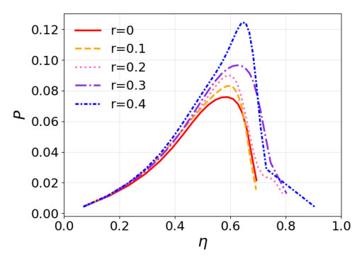
<figcaption class="paper-figure-caption"><b>Fig 2.</b> FIG. 2: Parametric plot showing the variation of Power (P) vs efficiency (η) for different squeezing strengths r across the magnetic field varied from BL = 0.5 to BH = 10BL. The parameters used here are: ωc = 5, τ = 1, τh = 1, T = 1, α = 0.5, ϕ = 0.</figcaption>
</figure>
<figure class="paper-figure-card">
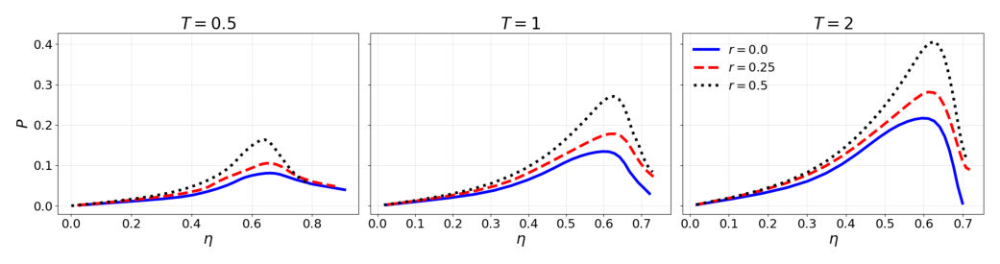
<figcaption class="paper-figure-caption"><b>Fig 3.</b> FIG. 3: Output power P versus efficiency η for different squeezing strengths r at three hot-bath temperatures T = 0.5, 1, and 2. Results are obtained by scanning the magnetic-field ratio BH/BL at fixed coupling α = 1/2 and ϕ = 0, all other parameteric values are the same as in Fig. 2.</figcaption>
</figure>
<figure class="paper-figure-card">
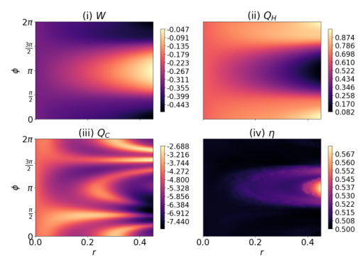
<figcaption class="paper-figure-caption"><b>Fig 4.</b> FIG. 4: Thermodynamic contour maps of the quantum Otto engine as functions of squeezing amplitude r and squeezing phase ϕ. Shown here (i) total work W, (ii) heat input from the hot bath QH, (iii) cold-stroke energy extraction QC, and (iv) cycle efficiency η = −W/QH. All parameters are identical to those in Fig. 2.</figcaption>
</figure>
<figure class="paper-figure-card">
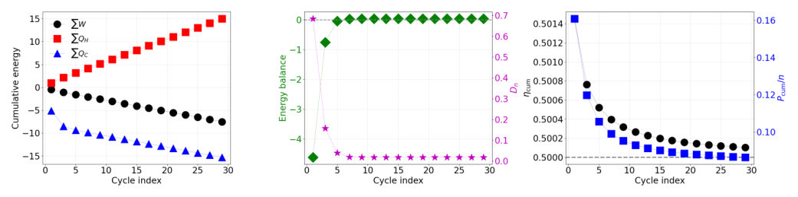
<figcaption class="paper-figure-caption"><b>Fig 5.</b> FIG. 5: Multi–cycle performance of the squeezed (r = 0.5) two–qubit Otto engine. The first panel shows the cumulative work output P</figcaption>
</figure>
</div>

<p><strong>Summary.</strong> The paper analyzes a Quantum Otto Engine built from two qubits coupled to a cavity mode, utilizing measurement-induced cooling instead of a traditional cold bath. By applying squeezing as an external fuel, the authors demonstrate that both power and efficiency are enhanced beyond established limits, establishing a blueprint for advanced quantum heat engines in QED systems.</p>
<p><strong>Why it may be interesting.</strong> This work directly addresses quantum thermodynamics in a highly relevant platform (Cavity QED), showing how engineered quantum resources can overcome fundamental thermodynamic bounds.</p>
<details>
<summary>Detailed structure</summary>
<p><strong>Main problem.</strong> Investigating how quantum resources like squeezing and measurement back-action can enhance the performance of a Quantum Otto Engine (QOE) beyond standard thermodynamic limits.</p>
<p><strong>Main result.</strong> Squeezing systematically enhances both the power output and operational efficiency, allowing the engine to operate above the standard quantum Otto limit by utilizing non-classical correlations.</p>
<p><strong>Method.</strong> The analysis combines theoretical modeling using the Hierarchical Equations of Motion (HEOM) for bath interactions with perturbative treatments of squeezing effects on work extraction and heat absorption across the four thermodynamic strokes.</p>
<p><strong>Model / system.</strong> The system is a two-qubit working substance coupled to a cavity mode, operating within a Cavity Quantum Electrodynamics (QED) architecture. The engine cycle is driven by non-Markovian hot baths and cooled via projective measurement on the cavity mode.</p>
<p><strong>Key observables.</strong> Power output, operational efficiency ($\eta$), coherence ($\zeta(t)$), entanglement, and work extracted ($W$).</p>
<p><strong>Important parameters / regimes.</strong> Squeezing strength ($\mu$ or $r$), squeezing phase ($\phi$), bath temperature, and coupling constants ($g_1, g_2$).</p>
<p><strong>Assumptions / limitations.</strong> The cold stroke is modeled by projective measurement back-action rather than thermal contact; the analysis confines itself to a specific invariant subspace (Sector A).</p>
<p><strong>Figures summary.</strong> Figure 1 illustrates the Quantum Otto cycle dynamics involving two coupled qubits interacting with a common cavity.</p>
<p><strong>Paper structure.</strong> The paper details the Hamiltonian and system decomposition, applies HEOM for bath interactions, analyzes work extraction during non-adiabatic strokes using squeezing terms, calculates heat absorption modified by coherence, and finally formulates the total resource-inclusive efficiency ($\eta_{	ext{tot}}$).</p>
</details>
<details>
<summary>Abstract</summary>
<p>We investigate a quantum Otto engine (QOE) constructed from the two-qubit quantum Rabi model, operating within a cavity quantum electrodynamics (QED) architecture. The engine operates with two qubits as the working substance and a single non-Markovian hot thermal bath, modeled via the hierarchical equations of motion (HEOM) formalism. In place of a conventional cold thermal reservoir, the cooling stroke is realized through a projective measurement protocol on the cavity mode, which acts as an ancillary subsystem and effectively mimics a cold bath for the qubit working medium via measurement back-action. A squeezing drive applied to the cavity mode serves as a quantum fuel. We demonstrate that cavity squeezing systematically enhances both the power output and operational efficiency of the engine - the work extracted per unit of heat drawn from the hot bath-driving it above the standard quantum Otto limit. In the limit-cycle regime, the efficiency, while remaining above the Otto bound throughout, asymptotically converges to it from above. This identifies squeezing as a controllable quantum resource for thermodynamic optimization. Our results reveal that the interplay between qubit-cavity coupling, measurement-induced cooling, and non-equilibrium squeezing gives rise to a multi-resource thermodynamic architecture with performance characteristics inaccessible to conventional two-bath quantum Otto engines, thereby providing a concrete route toward experimentally realizable quantum heat engines in cavity QED platforms.</p>
</details>
<p><sub><a href="#top">↑ back to top</a></sub></p>

<p><a id="paper-2608.02060"></a></p>
<h3 id="characterizing-the-nitrogen-vacancy-center-singlet-transition-and-its-phonon-sideband-for-absorption-based-room-temperature-magnetometry"><a href="http://arxiv.org/abs/2608.02060v1">Characterizing the nitrogen-vacancy center singlet transition and its phonon sideband for absorption-based room-temperature magnetometry</a></h3>
<p><strong>Authors:</strong> Tobias Probst, Florian Schall, Sebastian Heuft, Janina J. Schindler, Lukas Lindner, Sven Mägdefessel, Rüdiger Quay, Philipp Reineck, Alexander M. Zaitsev, Takeshi Ohshima, Matthias Weidemüller, Jan Jeske<br>
<strong>Type:</strong> both · <strong>Category:</strong> other · <strong>PDF:</strong> <a href="https://arxiv.org/pdf/2608.02060v1">https://arxiv.org/pdf/2608.02060v1</a><br>
<strong>Analysis basis:</strong> full PDF text, analyzed in chunks
<strong>Topic relevance:</strong> 🔥 <code>QC/QI experiment</code> <strong>4/5</strong> · 🔥 <code>spintronics-quantum-optics interface</code> <strong>4/5</strong> · <code>correlated cavity matter</code> <strong>3/5</strong> · <code>quantum optics experiment</code> <strong>3/5</strong> · <code>Tavis-Cummings &amp; cavity-many-emitter</code> <strong>2/5</strong> · <code>exotic spin models in light-matter</code> <strong>2/5</strong> · <code>methods for driven-dissipative</code> <strong>2/5</strong> · <code>quantum measurements</code> <strong>2/5</strong> · <code>Keldysh / 2PI / non-Gaussian methods</code> <strong>1/5</strong> · <code>analog quantum simulation</code> <strong>1/5</strong> · <code>correlated / nonlocal dissipation</code> <strong>1/5</strong> · <code>driven-dissipative phase transition</code> <strong>1/5</strong></p>
<div class="figure-strip-hint">↔ Scroll figures horizontally</div>
<div class="paper-figures-scroll">
<figure class="paper-figure-card">
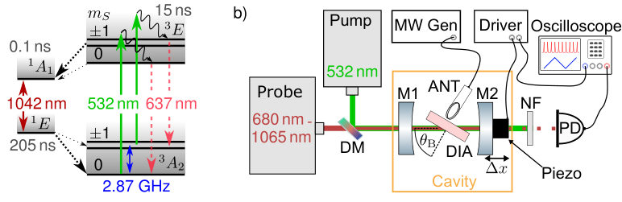
<figcaption class="paper-figure-caption"><b>Fig 1.</b> FIG. 1. NV−energy level diagram and cavity-enhanced spectroscopy setup. a) Energy levels of the NV−center. Optical and microwave transitions are indicated by colors, while phonon-mediated transitions are shown in black. The thickness of the dotted black arrow indicates the probability of the ISC between the triplet and singlet states. The electronic energy levels are broadened due to interactions with phonons (indicated by gray shading). A detailed description of the optical and electronic properties is given in the main text. b) Experimental setup for cavity-enhanced spectroscopy including a 532 nm pump laser and a tunable 680-1065 nm probe laser. Their beams are overlapped with a dichroic...</figcaption>
</figure>
<figure class="paper-figure-card">
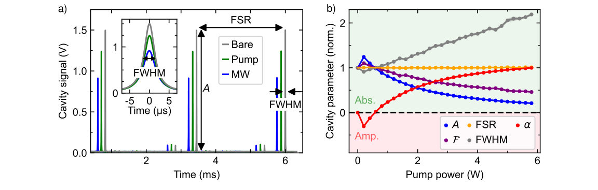
<figcaption class="paper-figure-caption"><b>Fig 2.</b> FIG. 2. Cavity resonances for different experimental configurations and pump power dependence of cavity parameters. a) Cavity resonances for the bare (gray), pump-induced (green) and microwave-induced while the pump laser is active (blue) cavity signals. Differences in the cavity signal between these three cases are used to calculate the signal changes α and the ODMR contrast, as described in the main text. The cavity resonances are defined by the amplitude A, the width (FWHM) and the resonance spacing (FSR), allowing to determine the cavity finesse F. This measurement was performed at a probe wavelength of 900 nm, a pump power of 0.85 W and a microwave power of 40 dBm. b) Pump power...</figcaption>
</figure>
<figure class="paper-figure-card">
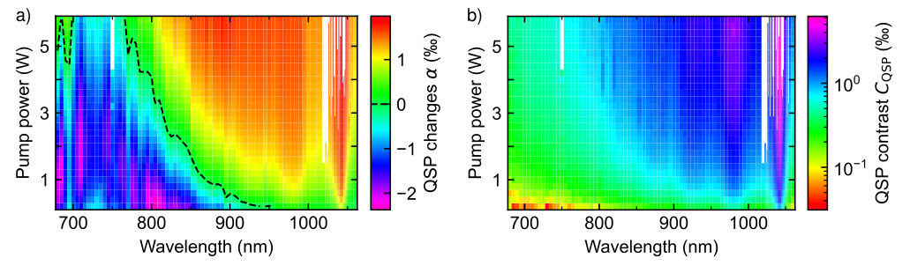
<figcaption class="paper-figure-caption"><b>Fig 3.</b> FIG. 3. Quasi-single-pass pump-induced signal changes and collective ODMR contrast. a) Pump-induced signal changes α over the entire available spectral and pump power range normalized to a quasi-single-pass (QSP) following Eq. (1). The black dotted line separates amplification and absorption regimes which are mainly associated with NV−triplet stimulated emission and singlet absorption, respectively. The strongest absorption occurs around the singlet ZPL at 1042 nm. Between 800-950 nm triplet emission and singlet absorption regimes overlap, leading to a competition of amplification and absorption effects. Which one of these effects dominates overall is dependent on the pump power. b) QSP...</figcaption>
</figure>
<figure class="paper-figure-card">
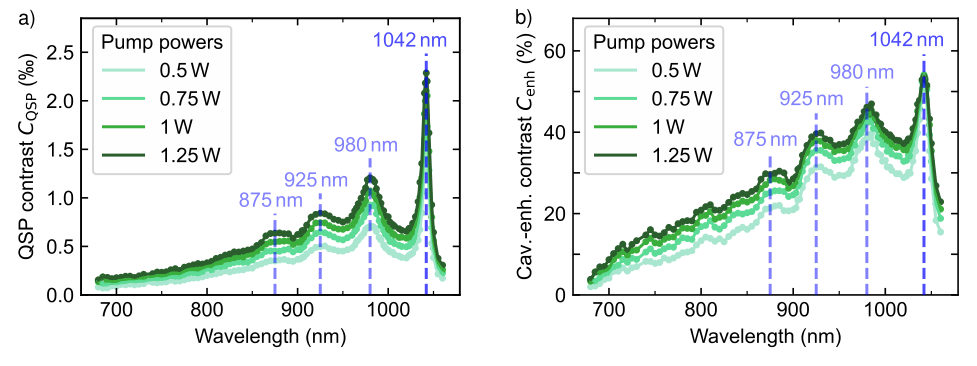
<figcaption class="paper-figure-caption"><b>Fig 4.</b> FIG. 4. Quasi-single-pass and cavity-enhanced collective ODMR contrasts for various pump powers. a) Quasi- single-pass (QSP) collective ODMR contrast CQSP at a microwave power of 40 dBm revealing the room-temperature NV−</figcaption>
</figure>
<figure class="paper-figure-card">
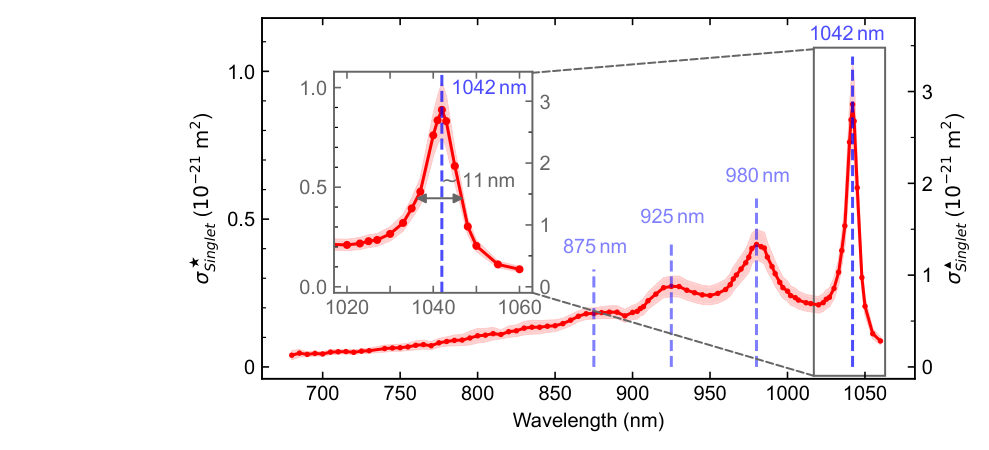
<figcaption class="paper-figure-caption"><b>Fig 5.</b> FIG. 5. Room-temperature absorption cross section (ACS) for the NV−singlet transition with its corresponding phonon sideband. The depicted curve characterizes the 1E →1A1 transition and corresponds to an average of multiple ACSs obtained from several combinations of pump and microwave powers, which we use to cross-validate our experimental method (see Fig. S10). The left and right y-axes indicate the corresponding singlet ACS values depending on which 532 nm NV−ACS was used (&quot;⋆&quot;→[40] and &quot;▲&quot;→[41]). At the ZPL, located at 1042 nm and displayed in the inset, an ACS of σ ⋆ 1042 = (0.89 ± 0.14) · 10−21 m2 or σ ▲ 1042 = (2.9 ± 0.5) · 10−21 m2. and a FWHM of ∼11 nm are found. A quasi-local 75 meV...</figcaption>
</figure>
</div>

<p><strong>Summary.</strong> This paper characterizes the nitrogen-vacancy center's singlet transition and its phonon sideband using advanced absorption spectroscopy at room temperature. By employing cavity enhancement and novel microwave-induced signal analysis, the authors quantify the fundamental absorption cross sections of these transitions. This work significantly advances the feasibility and sensitivity of NV-based magnetometers for practical applications.</p>
<p><strong>Why it may be interesting.</strong> This work is highly relevant as it pushes the boundaries of quantum sensing by providing precise spectroscopic characterization of solid-state qubits (NV centers) under ambient conditions. The combination of cavity QED principles with detailed rate modeling offers a robust framework for understanding open quantum systems in materials science.</p>
<details>
<summary>Detailed structure</summary>
<p><strong>Main problem.</strong> The goal is to develop highly sensitive, room-temperature magnetometry using nitrogen-vacancy (NV) centers in diamond by characterizing the magnetic-field-dependent absorption properties of the NV singlet transition and its phonon sideband.</p>
<p><strong>Main result.</strong> The study successfully quantifies the room-temperature absorption cross sections for the singlet transition ($\sigma^{\star}_{1042} \approx 0.89 \cdot 10^{-21} 	ext{ m}^2$) using novel cavity-enhanced and microwave-induced techniques.</p>
<p><strong>Method.</strong> The research combines cavity-enhanced spectroscopy, which measures signal changes under pump and microwave fields, with detailed rate model calculations to isolate the intrinsic absorption cross section from background effects.</p>
<p><strong>Model / system.</strong> The physical system is NV centers in diamond. The analysis involves modeling the electronic state evolution using a density matrix approach governed by coupled differential equations, alongside experimental measurements utilizing high-finesse optical cavities and microwave excitation.</p>
<p><strong>Key observables.</strong> Absorption cross sections ($\sigma$), Optically Detected Magnetic Resonance (ODMR) contrast ($C_{	ext{QSP}}$), and cavity signal changes ($\alpha$).</p>
<p><strong>Important parameters / regimes.</strong> Room temperature operation, spectral range of 680-1050 nm, specific absorption wavelengths like 1042 nm, and Rabi frequencies ($\Omega$).</p>
<p><strong>Assumptions / limitations.</strong> The use of normalization techniques is employed to eliminate the cavity enhancement effect; a novel method using microwave-induced changes is used to suppress contributions from other defects.</p>
<p><strong>Figures summary.</strong> Figures illustrate the NV energy level diagram and experimental setup. Key figures show cavity resonances under different excitation conditions (Bare, Pump, MW) and plot calculated signal changes ($\alpha$) versus pump power, demonstrating transitions between amplification and absorption regimes.</p>
<p><strong>Paper structure.</strong> The paper progresses from establishing the promise of absorption-based magnetometry over fluorescence methods to detailing the experimental setup using cavity enhancement. It then presents advanced analysis involving rate modeling (density matrix) to derive quantitative cross sections for the singlet transition across its phonon sideband, validating results through multiple measurement techniques.</p>
</details>
<details>
<summary>Abstract</summary>
<p>Magnetometry with nitrogen-vacancy (NV) centers in diamond has shown great promise in recent years. In particular, absorption-based magnetometry techniques, employing a cavity to enhance the absorption length, can improve the contrast and sensitivity compared to conventional techniques based on reading out the NV$^-$ triplet fluorescence. The absorption techniques rely on magnetic-field-dependent absorption at the NV$^-$ singlet zero phonon line at 1042$\,$nm and its phonon sideband. In a cavity-enhanced spectroscopy approach, we study pump-laser- and microwave-induced cavity signal changes at room temperature over a spectral range of 680-1050$\,$nm. Through normalization, we eliminate the cavity-enhancement effect and provide quasi-single-pass values for the absorption and optically detected magnetic resonance (ODMR) contrast. The highest contrast is found at 1042$\,$nm, but multiple points of high contrast are found at the peaks of the phonon sideband. Additionally, cavity-enhanced ODMR contrasts in the range of 50-80$\,\%$ are presented. We further measure the broadband singlet absorption cross section at room temperature with a novel method through microwave-induced signal changes. This method is insensitive to pump-laser-induced signal changes by other defects and quantifies the room-temperature absorption strength of the singlet transition and its entire phonon sideband. We determine the absorption cross section at 1042$\,$nm to be $σ^{\,\bigstar}_{1042}=(0.89\pm0.14)\cdot 10^{-21}\,\text{m}^2$ or $σ^{\,\blacktriangle}_{1042}=(2.9\pm0.5)\cdot 10^{-21}\,\text{m}^2$. depending on the employed 532$\,$nm NV$^-$ absorption cross section.</p>
</details>
<p><sub><a href="#top">↑ back to top</a></sub></p>

<p><a id="paper-2608.00638"></a></p>
<h3 id="work-statistics-of-autonomous-quantum-energy-pumps"><a href="http://arxiv.org/abs/2608.00638v1">Work Statistics of Autonomous Quantum Energy Pumps</a></h3>
<p><strong>Authors:</strong> Yang Peng<br>
<strong>Type:</strong> theory · <strong>Category:</strong> statistical mechanics · <strong>PDF:</strong> <a href="https://arxiv.org/pdf/2608.00638v1">https://arxiv.org/pdf/2608.00638v1</a><br>
<strong>Analysis basis:</strong> full PDF text, analyzed in chunks
<strong>Topic relevance:</strong> 🔥 <code>quantum measurements</code> <strong>4/5</strong> · <code>correlated / nonlocal dissipation</code> <strong>3/5</strong> · <code>driven-dissipative phase transition</code> <strong>3/5</strong> · <code>methods for driven-dissipative</code> <strong>3/5</strong> · <code>non-equilibrium dynamics</code> <strong>3/5</strong> · <code>Keldysh / 2PI / non-Gaussian methods</code> <strong>2/5</strong> · <code>entanglement &amp; information structure</code> <strong>2/5</strong> · <code>non-equilibrium universality</code> <strong>2/5</strong> · <code>Tavis-Cummings &amp; cavity-many-emitter</code> <strong>1/5</strong> · <code>analog quantum simulation</code> <strong>1/5</strong> · <code>correlated cavity matter</code> <strong>1/5</strong> · <code>measurement-induced transitions</code> <strong>1/5</strong></p>
<div class="figure-strip-hint">↔ Scroll figures horizontally</div>
<div class="paper-figures-scroll">
<figure class="paper-figure-card">
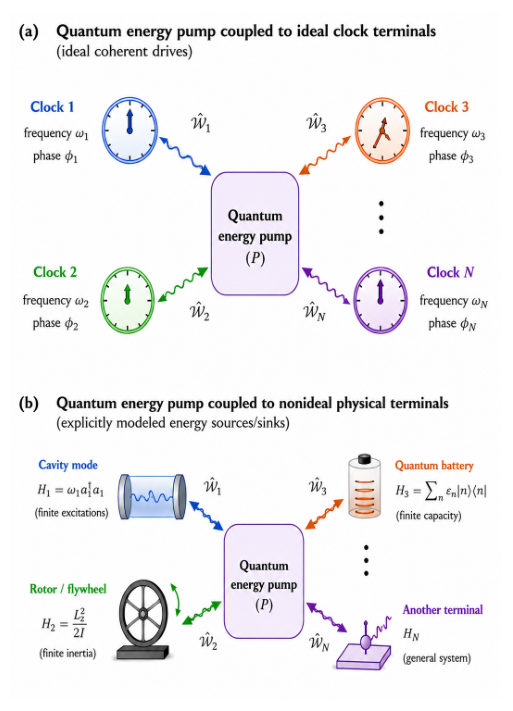
<figcaption class="paper-figure-caption"><b>Fig 1.</b> FIG. 1. Schematic of a quantum energy pump coupled to multiple energy terminals. The central pump mediates en- ergy exchange, and the arrows denote work supplied by the terminals. (a) Ideal clock terminals generate the phases of a periodic or quasiperiodic drive. (b) Physical terminals be- yond the ideal-clock limit may include cavity modes, rotors or flywheels, quantum batteries, and other energy-bearing quan- tum systems. Their finite resources and nonrigid dynamics can produce depletion and backaction, while pump–terminal correlations may modify the transfer statistics.</figcaption>
</figure>
<figure class="paper-figure-card">
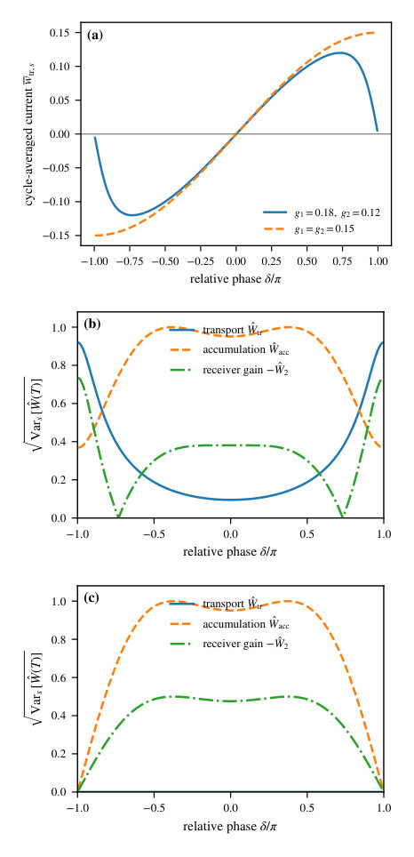
<figcaption class="paper-figure-caption"><b>Fig 2.</b> FIG. 2. Phase dependence of the two-clock qubit pump. (a) Cycle-averaged transport current wtr,s for unequal cou- plings (g1, g2) = (0.18, 0.12) and balanced couplings (g1, g2) = (0.15, 0.15). (b) One-cycle standard deviations of the transport work ˆ Wtr, accumulation work ˆ Wacc, and receiver energy gain −ˆ W2 for (g1, g2) = (0.18, 0.12). (c) The same three standard deviations for (g1, g2) = (0.15, 0.15). In all panels, Ω= 1, ϕ1 = δ/2, ϕ2 = −δ/2, and s = −1. The point δ = π in panel (c) is excluded because G = 0 and the Floquet spectrum is degenerate.</figcaption>
</figure>
<figure class="paper-figure-card">
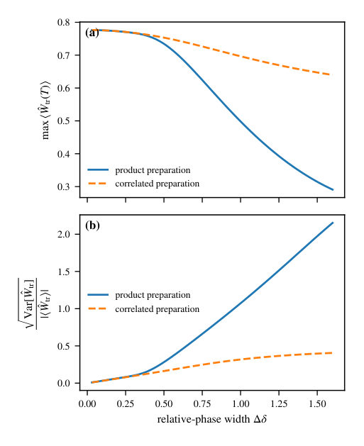
<figcaption class="paper-figure-caption"><b>Fig 3.</b> FIG. 4. Correlation-assisted one-cycle transport under wrapped-Gaussian uncertainty in the initial relative phase. (a) Maximum attainable mean transport work µmax prod(T) and µmax corr(T) for product and correlated pump–clock prepara- tions. (b) Relative standard deviations of the correspond- ing optimized transport work. The parameters are Ω= 1, (g1, g2) = (0.18, 0.12), δ0 = 2, ϕ1 = δ/2, and ϕ2 = −δ/2. The horizontal axis is the phase width ∆δ.</figcaption>
</figure>
<figure class="paper-figure-card">
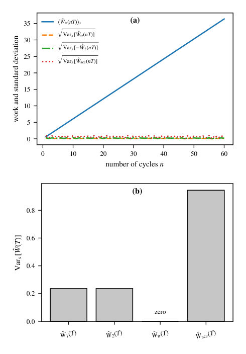
<figcaption class="paper-figure-caption"><b>Fig 4.</b> FIG. 3. Repeated-cycle work statistics and noise matching. (a) Mean transported work and standard deviations versus cycle number for Ω= 1, (g1, g2) = (0.18, 0.12), (ϕ1, ϕ2) = (0.7, −0.8), and s = −1. (b) One-cycle variances for Ω= 1, g1 = g2 = 0.15, (ϕ1, ϕ2) = (π/4, −π/4), and s = −1.</figcaption>
</figure>
<figure class="paper-figure-card">
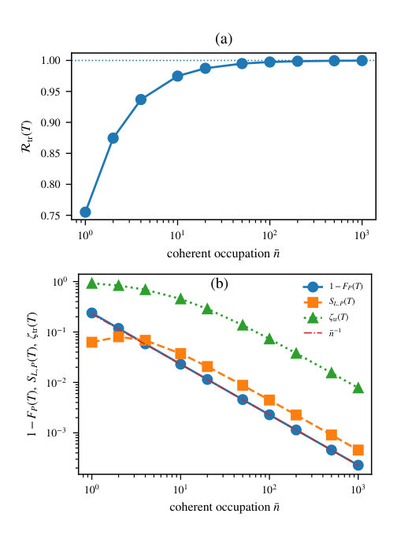
<figcaption class="paper-figure-caption"><b>Fig 5.</b> FIG. 5. Convergence of two coherent cavity terminals toward the ideal-clock limit over 1 ≤¯n ≤103. (a) Normalized mean transport Rtr(T). (b) Terminal-induced fraction of the exact transport variance ζtr(T), pump return infidelity 1 −FP (T), and pump linear entropy SL,P (T). The parameters are Ω= 1, (g1, g2) = (0.18, 0.12), (ϕ1, ϕ2) = (0.7, −0.8), and the initial pump state is the lower ideal-clock Floquet eigenstate. The horizontal line in panel (a) marks Rtr = 1; dash-dotted lines in panel (b) are proportional to ¯n−1.</figcaption>
</figure>
</div>

<p><strong>Summary.</strong> This paper establishes a comprehensive, terminal-resolved theory for analyzing how work is generated by autonomous quantum energy pumps. By explicitly treating the coupling terminals, it quantifies the role of initial correlations and develops diagnostics like the work-variance gap to measure non-ideal energy fluctuations. It advances understanding beyond mean current measurements in quantum thermodynamics.</p>
<p><strong>Why it may be interesting.</strong> This is highly relevant for AMO and open quantum systems as it provides rigorous tools (like work-variance gaps) to quantify energy flow and dissipation in driven quantum devices beyond simple mean measurements.</p>
<details>
<summary>Detailed structure</summary>
<p><strong>Main problem.</strong> The research develops a detailed, terminal-resolved theory for calculating work statistics in autonomous quantum energy pumps, moving beyond simple mean current measurements.</p>
<p><strong>Main result.</strong> The framework shows that initial pump-terminal correlations can enhance the maximum achievable directional work, and it quantifies fluctuations missed by ignoring terminal backaction via a positive work-variance gap.</p>
<p><strong>Method.</strong> The theory uses full-space quantum dynamics, tracing over explicit energy terminals modeled as ideal clocks to derive exact expressions for multi-terminal work moments.</p>
<p><strong>Model / system.</strong> The system is an autonomous quantum energy pump coupled to multiple energy sources/sinks (terminals), which are explicitly modeled using clock Hamiltonians. The analysis extends from idealized 'ideal-clock' limits to more realistic, nonideal physical terminals like cavities.</p>
<p><strong>Key observables.</strong> Work statistics ($\hat{W}_i(t)$), correlation-assisted gain ($\Delta_{	ext{corr}}(t)$), work-variance gap ($\hat{G}$), and asymptotic current operators ($\hat{w}(\infty)_i$).</p>
<p><strong>Important parameters / regimes.</strong> Periodicity (Floquet eigenstates), initial pump--terminal correlations, and the deviation from ideal clock behavior.</p>
<p><strong>Assumptions / limitations.</strong> Initial models assume ideal clock terminals; later extensions address nonideal physical terminals. The analysis often relies on projecting dynamics onto coordinate-diagonal density matrices ($\hat{\sigma}_P(s)$).</p>
<p><strong>Figures summary.</strong> Figure 1 illustrates the setup, showing a central pump coupled to energy terminals, contrasting idealized quantum clocks with more complex physical terminals like cavities.</p>
<p><strong>Paper structure.</strong> The paper builds from defining the full Hamiltonian and dynamics in terms of terminal couplings, deriving work observables based on these explicit terminals, analyzing the role of initial correlations, applying results to periodic/Floquet systems, and finally extending the theory to nonideal physical environments.</p>
</details>
<details>
<summary>Abstract</summary>
<p>We develop a terminal-resolved theory of work statistics for autonomous quantum energy pumps. By modeling the systems that supply and receive energy as explicit quantum terminals, the energy exchanged with each terminal is defined directly from its Hamiltonian change. When the terminals are modeled by ideal clocks, these full-space observables admit exact representations on the pump Hilbert space and recover the conventional phase-derivative currents of periodically and quasiperiodically driven systems. The framework resolves transported work from energy accumulated in the pump. It also incorporates arbitrary initial pump--terminal correlations and identifies when correlations can enhance directional energy transfer under uncertain driving phases. For periodic pumps, we derive finite-cycle work statistics in Floquet eigenstates, relate their fluctuations to Floquet quantum geometry, and show that the long-time terminal currents become mutually compatible. An exactly solvable two-terminal qubit exhibits noise matching, in which transport becomes sharp through cancellation of common-mode terminal fluctuations even though the individual terminal energies remain noisy. Finally, for physical terminals beyond the ideal-clock limit, we introduce a positive work-variance gap that quantifies the fluctuations missed by a pump-only description. A coherent-cavity benchmark shows systematic convergence toward the ideal-clock regime with increasing occupation while demonstrating that agreement of the mean current alone does not guarantee accurate work statistics.</p>
</details>
<p><sub><a href="#top">↑ back to top</a></sub></p>

<p><a id="paper-2608.02049"></a></p>
<h3 id="adaptive-reconstruction-of-bosonic-quantum-states"><a href="http://arxiv.org/abs/2608.02049v1">Adaptive Reconstruction of Bosonic Quantum States</a></h3>
<p><strong>Authors:</strong> Vasilisa Usova, Phila Rembold, Ian Yang, Marco Rossignolo, Simone Montangero, Samuele Tosatto, Gerhard Kirchmair<br>
<strong>Type:</strong> both · <strong>Category:</strong> other · <strong>PDF:</strong> <a href="https://arxiv.org/pdf/2608.02049v1">https://arxiv.org/pdf/2608.02049v1</a><br>
<strong>Analysis basis:</strong> full PDF text, analyzed in chunks
<strong>Topic relevance:</strong> 🔥 <code>QC/QI experiment</code> <strong>4/5</strong> · <code>methods for driven-dissipative</code> <strong>3/5</strong> · <code>quantum measurements</code> <strong>3/5</strong> · <code>quantum optics experiment</code> <strong>3/5</strong> · <code>Tavis-Cummings &amp; cavity-many-emitter</code> <strong>2/5</strong> · <code>analog quantum simulation</code> <strong>2/5</strong> · <code>measurement-induced transitions</code> <strong>2/5</strong> · <code>correlated / nonlocal dissipation</code> <strong>1/5</strong> · <code>correlated cavity matter</code> <strong>1/5</strong> · <code>driven-dissipative phase transition</code> <strong>1/5</strong> · <code>entanglement &amp; information structure</code> <strong>1/5</strong> · <code>non-equilibrium dynamics</code> <strong>1/5</strong></p>
<div class="figure-strip-hint">↔ Scroll figures horizontally</div>
<div class="paper-figures-scroll">
<figure class="paper-figure-card">

<figcaption class="paper-figure-caption"><b>Fig 1.</b> Figure 1: Closed-loop optimal control and bosonic state reconstruction. (a) Closed-loop quantum optimal control in a cQED setup. A figure of merit (FoM) is calculated based on the result of the bosonic state reconstruction and passed to the optimisation algorithm that generates new control pulses for the next optimisation iteration. (b) Reconstruction algorithm workflow. Measured Wigner values are sampled with replacement to obtain 10 different datasets. These datasets are passed to 10 identically initialised models. As a result of maximum a posteriori (MAP) optimisation, models converge to a different set of parameters and produce various Wigner maps. Deviations between the generated...</figcaption>
</figure>
<figure class="paper-figure-card">

<figcaption class="paper-figure-caption"><b>Fig 2.</b> Figure 2: Example of the state reconstruction. (a) Reference high-resolution Wigner map. The measurement time is about 4 hours. (b) Reconstructed Wigner map. The measurement time is about 3.5 minutes. (c) 1000 measured points during the reconstruction. (d) Residuals between the measured and reconstructed data R(β) = Wmeas(β) −Wmodel(β). Since the model does not account for the bending of the fringes (see Eq. (4)), a small deviation is always present between the model and the observed data in the fringe area.</figcaption>
</figure>
<figure class="paper-figure-card">

<figcaption class="paper-figure-caption"><b>Fig 3.</b> Figure 3: Hyperparameter search for the optimal reconstruction. The statistics for each set of hyperparameters is obtained from 100 experimental reconstruction runs. Infidelity is calculated as F2-fidelity between the model fit to the reference high-resolution Wigner map and the reconstructed Wigner map. (a) Mean of infidelities, calculated by 10 bootstrapped models, after 1000 measurements for different sets of hyperparameters. Each band represents one combination of hyperparameters. Its colour shows the resulting mean infidelity, where darker purple colours represent a smaller mean infidelity across the reconstruction runs. (b) Standard deviation of infidelities, calculated by 10...</figcaption>
</figure>
<figure class="paper-figure-card">

<figcaption class="paper-figure-caption"><b>Fig 4.</b> Figure 4: Illustration of the fidelity metrics (estimands) used in this section, computed according to Eq. (11). The coloured Wigner map corresponds either to the measured Wigner values or to the fitted/corrected Wigner map inferred from those measurements. The black contour indicates the reference Wigner map against which the fidelity is evaluated. (a) Fidelity between the Wigner map of the measured state and the target cat state, F (m) ≡F (meas, target) 2 . (b) Fidelity between the fit to the measured Wigner values and the fit to a high-resolution Wigner map, F (f) ≡F (fit meas, fit high res) 2 . (c) Fidelity between the fit corrected for the transformations (displacements and rotations)...</figcaption>
</figure>
<figure class="paper-figure-card">

<figcaption class="paper-figure-caption"><b>Fig 5.</b> Figure 5: Comparison of Wigner function sampling strategies for |Cπ√</figcaption>
</figure>
</div>

<p><strong>Summary.</strong> The paper introduces an adaptive reconstruction technique to estimate the fidelity of bosonic quantum states, such as Schrödinger cat states, by reconstructing their Wigner function from minimal measurements. It employs a sophisticated combination of Bayesian inference and active learning guided by uncertainty quantification. This method proves highly efficient for experimental platforms like cQED, enabling autonomous state optimization via closed-loop control.</p>
<p><strong>Why it may be interesting.</strong> This work directly addresses the practical challenge of characterizing complex quantum states in hardware platforms like cQED. The combination of active learning with quantum control makes it highly relevant for experimentalists working on open quantum systems and state preparation.</p>
<details>
<summary>Detailed structure</summary>
<p><strong>Main problem.</strong> Characterizing bosonic quantum states is difficult due to large Hilbert spaces and high measurement costs, especially when physical equivalence involves phase space transformations.</p>
<p><strong>Main result.</strong> The proposed adaptive reconstruction technique successfully estimates state fidelity with respect to a family of states using significantly fewer measurements than conventional methods.</p>
<p><strong>Method.</strong> It combines physics-informed parametric modeling with Bayesian inference, bootstrap resampling, and active learning to guide the selection of optimal phase space sampling points.</p>
<p><strong>Model / system.</strong> The study focuses on bosonic systems implemented on a circuit quantum electrodynamics (cQED) platform. Key states analyzed are Schrödinger cat states, whose properties are characterized via their Wigner function in phase space.</p>
<p><strong>Key observables.</strong> Wigner function $W(eta)$, fidelity estimates ($F_{2	ext{-fidelity}}$), and the Fisher Information Matrix (FIM).</p>
<p><strong>Important parameters / regimes.</strong> Cat state amplitudes $\alpha \in [1, 3]$, measurement budget ($N_{	ext{total}}$), and entropy thresholds ($H_{	ext{th}}$) for active sampling.</p>
<p><strong>Assumptions / limitations.</strong> The analysis assumes Gaussian noise in Wigner measurements and relies on asymptotic limits when comparing different optimal sampling strategies.</p>
<p><strong>Figures summary.</strong> Figures illustrate the closed-loop quantum optimal control workflow, the iterative process of adaptive sampling using bootstrapped data to guide new measurement points, and comparisons showing how various sampling methods converge to theoretical bounds for fidelity uncertainty.</p>
<p><strong>Paper structure.</strong> The paper progresses from identifying the limitations of single-state tomography to introducing an active learning framework. It details the Bayesian/bootstrap methodology for reconstruction, demonstrates its application on cQED cat states, and concludes by comparing the resulting measurement efficiency against established sampling protocols using CRB analysis.</p>
</details>
<details>
<summary>Abstract</summary>
<p>Bosonic quantum systems provide a hardware-efficient platform for quantum information processing but remain challenging to characterise due to their large Hilbert space and the high measurement cost of state tomography. Existing approaches estimate the fidelity with respect to a single target state, making them unsuitable for applications in which physically equivalent states differ by phase space translations, rotations, or other transformations. Here, we introduce an adaptive reconstruction technique that estimates the fidelity with respect to a family of bosonic states while reconstructing the underlying Wigner function from a small number of measurements. The method combines a physics-informed parametric model with Bayesian inference, bootstrap, and active learning to iteratively select the most informative phase space sampling points. We implement the approach on a circuit quantum electrodynamics platform and benchmark it on Schrödinger cat states with amplitudes $α\in[1,3]$. The reconstruction yields reproducible fidelity estimates within a few minutes, remains robust to substantial displacements and rotations in phase space despite using a mismatched prior, and is sensitive to subtle state imperfections. We further compare the adaptive strategy with existing Wigner function sampling protocols experimentally, demonstrating the advantage of adaptive sampling for measurement-efficient fidelity estimation with respect to a family of cat states. Finally, we incorporate the reconstructed fidelity into the figure of merit used in a proof-of-principle closed-loop quantum optimal control experiment, demonstrating the applicability of the method to autonomous optimisation of bosonic quantum states.</p>
</details>
<p><sub><a href="#top">↑ back to top</a></sub></p>

<p><a id="paper-2608.01680"></a></p>
<h3 id="fate-of-moire-flat-bands-for-a-weakly-repulsive-bose-einstein-condensate-in-one-dimensional-math115math-symmetric-bichromatic-optical-lattices"><a href="http://arxiv.org/abs/2608.01680v1">Fate of moiré flat bands for a weakly repulsive Bose-Einstein condensate in one-dimensional $\mathcal{PT}$-symmetric bichromatic optical lattices</a></h3>
<p><strong>Authors:</strong> Enhong Cheng, Yu Tan, Yanzhen Xu, Li-Jun Lang<br>
<strong>Type:</strong> theory · <strong>Category:</strong> quantum gases · <strong>PDF:</strong> <a href="https://arxiv.org/pdf/2608.01680v1">https://arxiv.org/pdf/2608.01680v1</a><br>
<strong>Analysis basis:</strong> full PDF text, analyzed in chunks
<strong>Topic relevance:</strong> 🔥 <code>analog quantum simulation</code> <strong>4/5</strong> · 🔥 <code>driven-dissipative phase transition</code> <strong>4/5</strong> · <code>correlated / nonlocal dissipation</code> <strong>3/5</strong> · <code>methods for driven-dissipative</code> <strong>3/5</strong> · <code>non-equilibrium dynamics</code> <strong>3/5</strong> · <code>non-equilibrium universality</code> <strong>2/5</strong> · <code>Frenkel-Kontorova</code> <strong>1/5</strong> · <code>Keldysh / 2PI / non-Gaussian methods</code> <strong>1/5</strong> · <code>Kondo &amp; dissipative impurity</code> <strong>1/5</strong> · <code>entanglement &amp; information structure</code> <strong>1/5</strong></p>
<div class="figure-strip-hint">↔ Scroll figures horizontally</div>
<div class="paper-figures-scroll">
<figure class="paper-figure-card">

<figcaption class="paper-figure-caption"><b>Fig 1.</b> FIG. 1. Lowest (Eν=1, solid lines) and second (Eν=2, dashed lines) bands of the non-interacting Hermitian system for moir´e ratios α = 1/q at V0 = 0.8. The right panel shows the corre- sponding band gap ratio Gq defined in Eq. (12).</figcaption>
</figure>
<figure class="paper-figure-card">

<figcaption class="paper-figure-caption"><b>Fig 2.</b> FIG. 2. (a)-(f) Several lowest energy bands as a function of the non-Hermitian strength γ for different moir´e ratios (1/q) in the absence of interactions. The black and blue curves represent the real and imaginary parts of the lowest band (Eν=1), respectively; the gray curves represent the real parts of higher bands (Eν&gt;1), while the light-blue lines correspond to the imaginary parts of a few selected higher bands. (a)-(c) odd parities qo = {1, 3, 5}, with the dispersion Dqo and gap ratio Gqo of the lowest real band plotted against γ in (g) shown as solid and dashed lines, respectively; (d)-(f) even parities qe = {2, 4, 6}, with the corresponding Dqe and Gqe shown in (h). The PT -breaking...</figcaption>
</figure>
<figure class="paper-figure-card">

<figcaption class="paper-figure-caption"><b>Fig 3.</b> FIG. 3. Wave functions ψν(z) at k = 0 for the lowest three bands (upper panels) and the corresponding potential pro- files (lower panels) within one moir´e unit cell for (a) q = 2 and (b) q = 3. The real and imaginary parts of the poten- tial are shown by gray solid and blue dashed curves, respec- tively. The circles mark minima of the potential real part from Eq. (6), with the ± signs labeling the sign of its imag- inary part; the red open circle specifically marks the center minimum, at which V i(A/2) = 0. (a1) and (b1) represent ˜ψν in the Hermitian case, with |V21|/|V32| ≈3 and 0.63, respectively; the corresponding non-Hermitian counterparts (γ = 0.1) in (a2) and (b2), where in the...</figcaption>
</figure>
<figure class="paper-figure-card">

<figcaption class="paper-figure-caption"><b>Fig 4.</b> FIG. 4. The lowest real mean-field band and its dispersion Dq as functions of the non-Hermitian strength γ, for different interaction strengths nzc (color coded). Results for even parities (q = 2, 4) are shown in (a)-(b), using a blue color scale for nzc = 0.1 −0.5. (a1)(b1) D2,4 versus γ, while the typical band structures at γ = {0.05, 0.15, 0.25} are displayed in (a2)-(a4) and (b2)-(b4). Similarly, (c)-(d) present the odd parities (q = 3, 5), with nzc = 0.05 −0.2 indicated by a green scale. The D3,5 versus γ relation is in (c1)(d1), and the band structures at γ = {0.5, 1.5, 2.5} are in (c2)-(c4) and (d2)-(d4).</figcaption>
</figure>
<figure class="paper-figure-card">

<figcaption class="paper-figure-caption"><b>Fig 5.</b> FIG. 5. Several lowest mean-field bands at interaction strength nzc = 2 for q = 2 in (a) Hermitian and (b) non- Hermitian with γ = 0.25. The lowest (black dots) and second (blue dots) bands are purely real, while the third band (or- ange dots) is complex and only shows the real part. The linear bands are shown in gray for comparison.</figcaption>
</figure>
</div>

<p><strong>Summary.</strong> The paper theoretically investigates how dissipation and interactions modify the flatness of moiré bands in 1D BECs trapped by $\mathcal{PT}$-symmetric optical lattices. Key findings show that this behavior is strongly dependent on the parity of the underlying lattice ratio, leading to distinct physical responses for even versus odd parities. This provides a detailed roadmap for engineering quantum band structures using non-Hermitian control.</p>
<p><strong>Why it may be interesting.</strong> This work bridges concepts from nonlinear physics (GPE), topological/non-Hermitian systems ($\mathcal{PT}$-symmetry), and ultracold atomic physics (BECs in optical lattices). The parity dependence provides a rich, experimentally testable prediction for controlling quantum states via lattice geometry.</p>
<details>
<summary>Detailed structure</summary>
<p><strong>Main problem.</strong> The study investigates how dissipation (via $\mathcal{PT}$-symmetry breaking) and weak repulsive interactions affect the flatness of moiré flat bands in a Bose-Einstein condensate confined by a 1D bichromatic optical lattice.</p>
<p><strong>Main result.</strong> The fate of band flatness is highly dependent on the parity of the moiré ratio denominator, leading to distinct broadening or enhancement/reduction effects when interactions are included.</p>
<p><strong>Method.</strong> Theoretical analysis using the Gross-Pitaevskii equation (GPE) in both non-interacting and interacting limits, supplemented by perturbation theory and tight-binding models for large imaginary potential regimes.</p>
<p><strong>Model / system.</strong> The system is a Bose-Einstein condensate modeled by a 1D GPE subjected to a $\mathcal{PT}$-symmetric bichromatic optical lattice potential. The analysis focuses on the interplay between interaction strength ($g$) and the non-Hermitian control parameter ($\gamma$).</p>
<p><strong>Key observables.</strong> Moiré flatness of the lowest band, $\mathcal{PT}$-symmetry breaking points, bandwidth decay rates ($D_q$), and gap ratios ($G_q$).</p>
<p><strong>Important parameters / regimes.</strong> The moiré ratio $\alpha = k_2/k_1 = 1/q$, interaction strength $c$, and imaginary potential strength $\gamma$.</p>
<p><strong>Assumptions / limitations.</strong> The analysis assumes the system can be reduced to one dimension (negligible transverse excitations) and often employs approximations valid in the weak interaction or large-$\gamma$ limits.</p>
<p><strong>Figures summary.</strong> Figures illustrate band structures vs. moiré ratios, complex energy bands ($D_q$, $G_q$) vs. $\gamma$, wave function profiles within a unit cell for specific parities, and asymptotic scaling of bandwidth decay ($\sqrt{\gamma}$ dependence).</p>
<p><strong>Paper structure.</strong> The paper progresses from the general non-interacting case to analyzing parity-dependent effects based on moiré ratios. It then incorporates mean-field interactions, culminating in detailed analyses using tight-binding models to determine the large-$\gamma$ scaling of band properties.</p>
</details>
<details>
<summary>Abstract</summary>
<p>One-dimensional (1D) superlattices provide one simplified platform for exploring moiré physics from a low-dimensional perspective, with the ratio of lattice constants playing a role analogous to the twist angle in two-dimensional bilayers. Here, we propose a 1D $\mathcal{PT}$-symmetric bichromatic optical lattice for a weakly repulsive Bose-Einstein condensate and investigate how the interplay of dissipation and interaction impacts the lowest moiré flat band.   Without interaction, we find that the lowest-band flatness induced by commensurate ratios exhibits a parity-dependent response to the $\mathcal{PT}$-symmetric imaginary potential due to the distinct $\mathcal{PT}$ pairing mechanism for the energy spectrum.   For ratios with even denominators (i.e., even parities), the level attraction and thus the $\mathcal{PT}$-symmetry breaking occur within the lowest two bands, leading to a monotonic broadening of the lowest flat band, whereas odd denominators (i.e., odd parities) yield a nonmonotonic response due to the $\mathcal{PT}$-symmetry breaking within the second and the third lowest bands instead while the lowest band remains purely real.   This parity-dependent phenomenon can be understood by the perturbation theory.   Furthermore, by solving the Gross-Pitaevskii equation, we also find that although the weak repulsive interaction can broaden the moiré bands alone, the combined effects of interaction and imaginary potential also lead to parity-dependent behaviors.   For even parities, band flattening is consistently diminished, whereas for odd parities, the imaginary potential can either enhance or reduce the degree of flattening.   These results pave the way for experimental studies of dissipation and interaction effects on band flatness in moiré systems.</p>
</details>
<p><sub><a href="#top">↑ back to top</a></sub></p>

<p><a id="paper-2608.02425"></a></p>
<h3 id="measurement-and-control-of-the-interaction-frequency-shift-in-bosonic-optical-lattice-clocks"><a href="http://arxiv.org/abs/2608.02425v1">Measurement and control of the interaction frequency shift in bosonic optical lattice clocks</a></h3>
<p><strong>Authors:</strong> J. P. Salvatierra, M. Barbiero, G. Bertaina, D. Calonico, F. Levi, M. G. Tarallo<br>
<strong>Type:</strong> both · <strong>Category:</strong> other · <strong>PDF:</strong> <a href="https://arxiv.org/pdf/2608.02425v1">https://arxiv.org/pdf/2608.02425v1</a><br>
<strong>Analysis basis:</strong> full PDF text, analyzed in chunks
<strong>Topic relevance:</strong> 🔥 <code>analog quantum simulation</code> <strong>4/5</strong> · <code>methods for driven-dissipative</code> <strong>3/5</strong> · <code>quantum measurements</code> <strong>3/5</strong> · <code>quantum optics experiment</code> <strong>3/5</strong> · <code>Keldysh / 2PI / non-Gaussian methods</code> <strong>2/5</strong> · <code>QC/QI experiment</code> <strong>2/5</strong> · <code>correlated / nonlocal dissipation</code> <strong>1/5</strong> · <code>correlated cavity matter</code> <strong>1/5</strong> · <code>driven-dissipative phase transition</code> <strong>1/5</strong> · <code>entanglement &amp; information structure</code> <strong>1/5</strong> · <code>exotic spin models in light-matter</code> <strong>1/5</strong> · <code>non-equilibrium dynamics</code> <strong>1/5</strong></p>
<div class="figure-strip-hint">↔ Scroll figures horizontally</div>
<div class="paper-figures-scroll">
<figure class="paper-figure-card">

<figcaption class="paper-figure-caption"><b>Fig 1.</b> FIG. 1. Rabi spectroscopy of interacting bosons in optical lattices. a) Fraction of the atomic population contributing to the spectroscopic signal with a given site occupancy m for the 1D and 2D lattice configurations for Ntot = 7 × 104, with a pictorial view of their confinement volumes. b) Measured Rabi line shapes of the excited fraction for g to e interrogation for Ntot = 7 × 104 atoms, taken in a 1D lattice (orange circles) and in a 2D lattice (blue squares). While both profiles show a substantial broadening, the 2D profile is clearly asymmetric, revealing a many-body interaction structure. c) The reconstructed resolved atomic interaction sideband is plotted for both lattice...</figcaption>
</figure>
<figure class="paper-figure-card">

<figcaption class="paper-figure-caption"><b>Fig 2.</b> FIG. 2. Observation of clock frequency shift in a 2D lattice as function of the excitation fraction Pe as set by the locking point δlock (main panel) fitted by spin model integration (solid red line), with the absolute shift at the reference point pinned by the density shift measurement at different Ntot (in the inset). See main text for details.</figcaption>
</figure>
<figure class="paper-figure-card">

<figcaption class="paper-figure-caption"><b>Fig 3.</b> FIG. 3. Measurement of the interaction frequency shift in a 1D 88Sr optical lattice clock. Main panel: interleaved interac- tion shift measurements as function of the total lattice occu- pation Ntot at three different lock detunings δlock/Ω: 0.4 (tri- angles, green), 0.7 (squares, orange), 1.0 (circles, blue). Solid lines represents numerical fit by integrating the mean-field dis- sipative optical Bloch equations at the different δlock values, dashed lines are the unitary many-body spin-model interac- tion shift with same scattering parameters. Inset: Interaction frequency shift at a fixed total atom number Ntot = 7×103 as function of δlock. Colored points correspond to the frequency...</figcaption>
</figure>
</div>

<p><strong>Summary.</strong> This paper reports on high-precision measurements characterizing interaction frequency shifts in bosonic optical lattice clocks using $^{88}	ext{Sr}$ atoms. By analyzing the nonlinear density dependence of the clock shift in both 1D and 2D lattices, the authors demonstrate a method to actively tune out these systematic collisional shifts at specific operating points. This capability is vital for realizing next-generation quantum sensors with unprecedented stability.</p>
<p><strong>Why it may be interesting.</strong> This work is highly relevant as it pushes the boundaries of precision measurement in AMO physics by quantifying complex, many-body interactions that must be precisely modeled and controlled for next-generation quantum sensors.</p>
<details>
<summary>Detailed structure</summary>
<p><strong>Main problem.</strong> The research focuses on precisely measuring and controlling the nonlinear interaction frequency shifts (collisional shifts) experienced by bosonic atoms trapped in optical lattices.</p>
<p><strong>Main result.</strong> The study demonstrates that these interactions lead to a density-dependent clock shift, but crucially shows that this shift can be canceled at specific operating points (magic densities/detunings) in both 1D and 2D lattice geometries.</p>
<p><strong>Method.</strong> The authors combine precise experimental measurements of Rabi line shapes and sideband spectroscopy with theoretical modeling using mean-field approximations derived from full many-body Hamiltonians.</p>
<p><strong>Model / system.</strong> The system is a bosonic optical lattice clock utilizing $^{88}	ext{Sr}$ atoms, modeled by an effective spin Hamiltonian incorporating linear and nonlinear interaction terms. The dynamics are analyzed via both unitary Schrödinger equations and dissipative optical Bloch equations.</p>
<p><strong>Key observables.</strong> Clock shift dependence on atomic density ($N$), Rabi line shapes, and the reconstructed interaction sideband structure.</p>
<p><strong>Important parameters / regimes.</strong> Interaction energy scales ($U_{ee}, U_{eg}$), lattice dimensionality (1D vs 2D), and specific cancellation detunings ($\delta_{	ext{lock}}$).</p>
<p><strong>Assumptions / limitations.</strong> The analysis relies on mean-field approximations, adiabatic elimination techniques for radial degrees of freedom, and assumptions about the thermal state independence from spin dynamics.</p>
<p><strong>Figures summary.</strong> Figures illustrate Rabi spectroscopy showing asymmetric line shapes in 2D lattices and frequency shift measurements versus total atom number in 1D lattices, confirming interaction effects.</p>
<p><strong>Paper structure.</strong> The paper progresses by first establishing the general Hamiltonian for interacting bosons, deriving effective spin models via adiabatic elimination (theory), and then applying these frameworks to analyze experimental data from 1D and 2D lattice clocks to quantify density shifts and cancellation points (experiment).</p>
</details>
<details>
<summary>Abstract</summary>
<p>We report precise measurements of inter-level interactions in a bosonic optical lattice clock based on $^{88}$Sr atoms. We observe a nonlinear density dependence of the clock shift, even without reaching quantum degeneracy. In a 2D lattice, the Rabi line shape exhibits an interaction sideband consistent with a collective spin model, while in a 1D lattice the shift is modified by density-induced dephasing. These findings, combined with a careful choice of interrogation detuning and atomic density, can enable operation at a net-zero systematic density shift in $^{88}$Sr lattice clocks. We discuss the implications of these findings in many-body physics, quantum simulation, and precision isotope shift measurements, which provide a powerful probe for new physics beyond the Standard Model.</p>
</details>
<p><sub><a href="#top">↑ back to top</a></sub></p>

<p><a id="paper-2608.01179"></a></p>
<h3 id="noise-enhanced-temporal-boundary-states-in-non-hermitian-systems"><a href="http://arxiv.org/abs/2608.01179v1">Noise-enhanced temporal boundary states in non-Hermitian systems</a></h3>
<p><strong>Authors:</strong> Jielong Zhang, Bozheng Xue, Xianfeng Man, Baizhan Xia<br>
<strong>Type:</strong> both · <strong>Category:</strong> statistical mechanics · <strong>PDF:</strong> <a href="https://arxiv.org/pdf/2608.01179v1">https://arxiv.org/pdf/2608.01179v1</a><br>
<strong>Analysis basis:</strong> full PDF text, analyzed in chunks
<strong>Topic relevance:</strong> 🔥 <code>driven-dissipative phase transition</code> <strong>4/5</strong> · 🔥 <code>non-equilibrium dynamics</code> <strong>4/5</strong> · <code>analog quantum simulation</code> <strong>3/5</strong> · <code>correlated / nonlocal dissipation</code> <strong>3/5</strong> · <code>methods for driven-dissipative</code> <strong>3/5</strong> · <code>non-equilibrium universality</code> <strong>3/5</strong> · <code>Keldysh / 2PI / non-Gaussian methods</code> <strong>1/5</strong> · <code>Kondo &amp; dissipative impurity</code> <strong>1/5</strong> · <code>QC/QI experiment</code> <strong>1/5</strong></p>
<div class="figure-strip-hint">↔ Scroll figures horizontally</div>
<div class="paper-figures-scroll">
<figure class="paper-figure-card">

<figcaption class="paper-figure-caption"><b>Fig 1.</b> Fig. 1 | Time-periodically modulated 2D tight-binding model. a, Configuration of unit cell with uniform intra- and</figcaption>
</figure>
<figure class="paper-figure-card">

<figcaption class="paper-figure-caption"><b>Fig 2.</b> Fig. 2 | Temporal boundary state in a multi-degree-of-freedom spring–mass network driven by time-periodic</figcaption>
</figure>
<figure class="paper-figure-card">

<figcaption class="paper-figure-caption"><b>Fig 3.</b> Fig. 3 | Noise-enhanced temporal boundary states under PRTN and FRTN. a, PRTN. Random noise 𝑟( ∈</figcaption>
</figure>
<figure class="paper-figure-card">

<figcaption class="paper-figure-caption"><b>Fig 4.</b> Fig. 4 | Eigenvalues of the averaged superoperator. a, Eigenvalue evolution of the single-period averaged</figcaption>
</figure>
<figure class="paper-figure-card">

<figcaption class="paper-figure-caption"><b>Fig 5.</b> Fig. 5 Experimental realization of noise-enhanced temporal boundary states in a robotic metamaterial</figcaption>
</figure>
</div>

<p><strong>Summary.</strong> The paper demonstrates that temporal noise can paradoxically enhance topological boundary states in non-Hermitian systems. Using both theoretical superoperator analysis and experimental realization in a robotic metamaterial network, the authors show that averaging over noise leads to exponential amplification of these interface states. This establishes noise as a functional tool for engineering robust quantum devices.</p>
<p><strong>Why it may be interesting.</strong> This work directly addresses open quantum systems dynamics by showing how engineered noise can stabilize or amplify coherent quantum phenomena, which is highly relevant for designing robust quantum devices.</p>
<details>
<summary>Detailed structure</summary>
<p><strong>Main problem.</strong> The study investigates whether temporal noise, typically viewed as a destructive element, can constructively enhance or stabilize topological boundary states in non-Hermitian systems.</p>
<p><strong>Main result.</strong> Ensemble averaging over periodic or random temporal noise leads to an exponential enhancement of the response intensity at the temporal interface, establishing noise as a constructive ingredient for robust topological state emergence.</p>
<p><strong>Method.</strong> The analysis combines theoretical superoperator methods (Floquet theory) with experimental validation using programmable robotic metamaterial networks.</p>
<p><strong>Model / system.</strong> The system is modeled by a 2D periodically driven non-Hermitian tight-binding Hamiltonian, which is experimentally realized in a spring–mass network composed of controllable oscillators.</p>
<p><strong>Key observables.</strong> Response intensity at the temporal interface, growth rate of growing modes, decay rate of decaying ones, and quasi-energy spectrum gaps.</p>
<p><strong>Important parameters / regimes.</strong> Noise strength (W), modulation frequency ($\Omega$), coupling parameters ($\alpha$), and time periodicity ($T$).</p>
<p><strong>Assumptions / limitations.</strong> The analysis relies on ensemble averaging for noise effects and the slowly varying envelope approximation for the continuum model.</p>
<p><strong>Figures summary.</strong> Figures illustrate quasi-energy spectra showing gap opening, exponential growth of response intensity under both PRTN and FRTN noise regimes, and schematics/measurements from the robotic metamaterial network demonstrating amplification.</p>
<p><strong>Paper structure.</strong> The paper progresses from theoretical analysis using Floquet Hamiltonians to deriving superoperator evolution equations under different noise types (PRTN vs. FRTN), culminating in a detailed experimental realization and measurement campaign on a physical metamaterial platform.</p>
</details>
<details>
<summary>Abstract</summary>
<p>Time-periodic modulation introduces a synthetic degree of freedom to manipulate topological phases. This synthetic dimension can trigger a phase transition that localizes a boundary state at the temporal interface. Noise is widely deemed a fundamental threat to topological protection, universally anticipated to weaken or even destroy topological states. Here, we introduce periodically repeated temporal noise and fully random temporal noise into a 2D periodically driven non-Hermitian system. Paradoxically, under ensemble averaging, such temporal noise drives an exponential enhancement of the response intensity at the temporal interface. An averaged superoperator analysis shows that the noiseless band structure is preserved under both types of noise. Yet the noise increases the growth rate of growing modes while suppressing the decay rate of decaying ones. Finally, we experimentally realize the noise-enhanced temporal boundary state in a robotic metamaterial network. This finding establishes temporal noise as a constructive ingredient, enabling the unambiguous emergence of topological states and conferring exceptional robustness upon topological devices.</p>
</details>
<p><sub><a href="#top">↑ back to top</a></sub></p>

<p><a id="paper-2608.01484"></a></p>
<h3 id="non-hermitian-photon-number-filtering-using-n00n-state-bloch-oscillations"><a href="http://arxiv.org/abs/2608.01484v1">Non-Hermitian photon number filtering using N00N state Bloch oscillations</a></h3>
<p><strong>Authors:</strong> Sean Crowe, Joanna Ptasinski, Melvin Pascoguin, Stefan Evans<br>
<strong>Type:</strong> theory · <strong>Category:</strong> quantum information and computing · <strong>PDF:</strong> <a href="https://arxiv.org/pdf/2608.01484v1">https://arxiv.org/pdf/2608.01484v1</a><br>
<strong>Analysis basis:</strong> full PDF text, analyzed in chunks
<strong>Topic relevance:</strong> 🔥 <code>analog quantum simulation</code> <strong>4/5</strong> · <code>correlated / nonlocal dissipation</code> <strong>3/5</strong> · <code>driven-dissipative phase transition</code> <strong>3/5</strong> · <code>methods for driven-dissipative</code> <strong>3/5</strong> · <code>non-equilibrium dynamics</code> <strong>2/5</strong> · <code>non-equilibrium universality</code> <strong>2/5</strong> · <code>Keldysh / 2PI / non-Gaussian methods</code> <strong>1/5</strong> · <code>Kondo &amp; dissipative impurity</code> <strong>1/5</strong> · <code>correlated cavity matter</code> <strong>1/5</strong> · <code>entanglement &amp; information structure</code> <strong>1/5</strong> · <code>interference shaping light</code> <strong>1/5</strong> · <code>measurement-induced transitions</code> <strong>1/5</strong></p>
<div class="figure-strip-hint">↔ Scroll figures horizontally</div>
<div class="paper-figures-scroll">
<figure class="paper-figure-card">

<figcaption class="paper-figure-caption"><b>Fig 1.</b> FIG. 2. Example of an asymmetric loss platform (not to scale). Two waveguides serve as inputs and outputs (green), and the cut (red) labels 0 transmission. New waveguides are added after the cuts to minimize edge effects.</figcaption>
</figure>
<figure class="paper-figure-card">

<figcaption class="paper-figure-caption"><b>Fig 2.</b> FIG. 1. Photon density evolution for input N00N states - light propagates in the z direction, tunneling between the 30 waveguides spanning the platform, using B = 1, C = 1.75 as an example.</figcaption>
</figure>
<figure class="paper-figure-card">

<figcaption class="paper-figure-caption"><b>Fig 3.</b> FIG. 3. Conditional probabilities (Eq. (17)) with and without cuts at the half Bloch period (z = λB/2), plotted as func- tions of normalized position. The input N = 1 and N = 2 N00N states are applied with equal probability (α = β = 1, see Eq. (5)), with C/B = 0.3 and phase ϕ = π to achieve &gt; 80% filtration of the N = 2 sector.</figcaption>
</figure>
<figure class="paper-figure-card">

<figcaption class="paper-figure-caption"><b>Fig 4.</b> FIG. 4. Plot of conditional probabilities with and without cuts as a function of input phase. The same parameters as in Fig. 3 apply: α = β = 1 and C/B = 0.3. The probabilities are computed at the full Bloch period z = λB.</figcaption>
</figure>
<figure class="paper-figure-card">

<figcaption class="paper-figure-caption"><b>Fig 5.</b> FIG. 6. Plot of normalized mode participation ratios as a function of z, with the initial fraction of the population in the N = 1 N00N state being varied, while C/B = 0.3 and ϕ = π for N = 2 filtration. Normalized efficiencies for these different populations of photon number states have been calculated and are found in appendix D.</figcaption>
</figure>
</div>

<p><strong>Summary.</strong> The paper proposes using N00N state Bloch oscillations in a waveguide array with controlled asymmetric loss to perform non-Hermitian photon number filtering. By tuning the input phase, researchers can dynamically switch between enhancing or suppressing specific photon number components (e.g., favoring 2-photon states over 1-photon states). This offers a promising theoretical pathway for improving state preparation in photonic quantum circuits.</p>
<p><strong>Why it may be interesting.</strong> This work directly addresses quantum state manipulation in photonic circuits, which is a core area for quantum networking and computation. The use of engineered non-Hermitian physics (loss) to achieve filtering is a key concept in open quantum systems.</p>
<details>
<summary>Detailed structure</summary>
<p><strong>Main problem.</strong> The research aims to develop a method for non-Hermitian photon number filtering using N00N state Bloch oscillations.</p>
<p><strong>Main result.</strong> The scheme successfully filters specific photon number states, achieving high fidelity switching between 1-photon and 2-photon dominated output subspaces by tuning the input phase.</p>
<p><strong>Method.</strong> The method involves simulating the evolution of photonic N00N states in a waveguide array containing an engineered asymmetric loss profile (a 'cut').</p>
<p><strong>Model / system.</strong> The system is modeled using photonic waveguides exhibiting Bloch oscillations, governed by a Hamiltonian that includes coupling terms and linear growth in effective index. The process is analyzed via density matrix evolution ($
ho(z)$) across the cut.</p>
<p><strong>Key observables.</strong> Output probabilities ($P_1$, $P_2$) for 1-photon and 2-photon subspaces, and normalized efficiency ratios ($E_1/E_1(0)$, $E_2/E_2(0)$).</p>
<p><strong>Important parameters / regimes.</strong> Input phase ($\phi$), the ratio $C/B$ (controlling transverse spread), and the location of the asymmetric loss cut ($\lambda_B/2$).</p>
<p><strong>Assumptions / limitations.</strong> The analysis assumes the ability to prepare initial N00N states with high fidelity, and it models the evolution as piecewise across the engineered loss region.</p>
<p><strong>Figures summary.</strong> Figures illustrate photon density localization based on input phase (Fig. 1), conditional probabilities vs. input phase or $C/B$ (Figs. 4, 5), and normalized efficiency ratios showing suppression near the cut location (Fig. 7).</p>
<p><strong>Paper structure.</strong> The paper details the Hamiltonian for zero-loss evolution, introduces the asymmetric loss mechanism at $\lambda_B/2$, calculates the resulting reduced density matrix ($
ho_{    ext{cut}}$), and finally analyzes the output probabilities after propagating past the cut.</p>
</details>
<details>
<summary>Abstract</summary>
<p>We explore Bloch oscillations of $N=1$ and $N=2$ photonic N00N states, using an array of linearly growing effective index waveguides with a simulated asymmetric loss profile. Starting with equal probability input $N=1$ and $N=2$ N00N states, and siphoning off a portion of the waveguides near the half Bloch period, we selectively output specific photon number states. Tuning the input phase, we achieve dynamic switching between 2-photon dominated (80\% of the output) and 1-photon dominated (90\% of the output) cases. This offers a path to improved state preparation in photonic circuits used in computing and networking.</p>
</details>
<p><sub><a href="#top">↑ back to top</a></sub></p>

<p><a id="paper-2608.00849"></a></p>
<h3 id="spin-quantum-hall-effect-the-critical-exponents"><a href="http://arxiv.org/abs/2608.00849v1">Spin Quantum Hall Effect: the Critical Exponents</a></h3>
<p><strong>Authors:</strong> Hrant Topchyan, Win Nuding, Andreas Klümper, Ara Sedrakyan<br>
<strong>Type:</strong> theory · <strong>Category:</strong> disordered systems and neural networks · <strong>PDF:</strong> <a href="https://arxiv.org/pdf/2608.00849v1">https://arxiv.org/pdf/2608.00849v1</a><br>
<strong>Analysis basis:</strong> full PDF text, analyzed in chunks
<strong>Topic relevance:</strong> 🔥 <code>non-equilibrium universality</code> <strong>4/5</strong> · <code>analog quantum simulation</code> <strong>3/5</strong> · <code>driven-dissipative phase transition</code> <strong>3/5</strong> · <code>exotic spin models in light-matter</code> <strong>3/5</strong> · <code>non-equilibrium dynamics</code> <strong>3/5</strong> · <code>methods for driven-dissipative</code> <strong>2/5</strong> · <code>spintronics-quantum-optics interface</code> <strong>2/5</strong> · <code>Keldysh / 2PI / non-Gaussian methods</code> <strong>1/5</strong> · <code>Kondo &amp; dissipative impurity</code> <strong>1/5</strong></p>
<div class="figure-strip-hint">↔ Scroll figures horizontally</div>
<div class="paper-figures-scroll">
<figure class="paper-figure-card">

<figcaption class="paper-figure-caption"><b>Fig 1.</b> FIG. 1: The scattering network underlying the spin quantum Hall plateau transition.</figcaption>
</figure>
<figure class="paper-figure-card">

<figcaption class="paper-figure-caption"><b>Fig 2.</b> FIG. 2: Schematic representation of the structure of the S matrices. The two reflection blocks, R and R′ (blue stripes), and the two transmission blocks, T and T ′ (red stripes), are shown, with the arrows indicating the direction of the mapping.</figcaption>
</figure>
<figure class="paper-figure-card">

<figcaption class="paper-figure-caption"><b>Fig 3.</b> FIG. 3: Computed values of Γ(ε, ∆, M) (dots) and fitting curves obtained from the finite-size scaling ansatz used to determine the critical exponents.</figcaption>
</figure>
</div>

<p><strong>Summary.</strong> This paper numerically calculates the critical exponents ($
u$ and $\mu$) governing the Spin Quantum Hall Effect (SQHE) transition using a sophisticated S-matrix approach. By applying finite-size scaling theory to the network model, the authors confirm theoretical predictions for one exponent while providing precise estimates for both critical parameters in this disordered topological system.</p>
<p><strong>Why it may be interesting.</strong> This research provides rigorous numerical benchmarks for critical phenomena in topological phases, which has implications for understanding quantum transport in engineered superconducting materials or disordered electronic systems relevant to AMO physics.</p>
<details>
<summary>Detailed structure</summary>
<p><strong>Main problem.</strong> The primary goal is to determine the critical exponents ($
u$ for localization length and $\mu$ for boundary criticality) characterizing the Spin Quantum Hall Effect (SQHE). This serves as a crucial testbed for theories concerning disordered topological systems.</p>
<p><strong>Main result.</strong> Numerical calculations using the S-matrix approach yielded estimates for the exponents: $
u \approx 1.33$ and $\mu \approx 1.15$. The value found for $
u$ is consistent with the analytical prediction of $4/3$.</p>
<p><strong>Method.</strong> The authors employed high-precision numerical calculations based on the S-matrix approach applied to a regular network structure, utilizing finite-size scaling analysis.</p>
<p><strong>Model / system.</strong> The study analyzes the SQHE network model, which is a spin analogue of the IQHE. It models quasiparticle transport in 2D disordered superconductors with broken time-reversal symmetry and belongs to Altland–Zirnbauer class C.</p>
<p><strong>Key observables.</strong> Localization-length exponent ($
u$), boundary critical exponent ($\mu$), and the scaled Lyapunov exponent ($\Gamma$).</p>
<p><strong>Important parameters / regimes.</strong> Disorder strength ($\epsilon$ or $\Delta$) and system size ($M$). The analysis is performed near the critical point where $\epsilon = \Delta = 0$.</p>
<p><strong>Assumptions / limitations.</strong> The analysis is restricted to the regular network geometry, and the finite-size scaling ansatz for the Lyapunov exponent is employed.</p>
<p><strong>Figures summary.</strong> Figure 1 illustrates the scattering network structure underlying the SQHE plateau transition. Figure 3 shows computed values of the scaled Lyapunov exponent $\Gamma$ versus system size $M$, fitted using a finite-size scaling ansatz to extract $
u$ and $\mu$.</p>
<p><strong>Paper structure.</strong> The paper first establishes the physical model (SQHE network) and its connection to previous work. It then details the mathematical framework, focusing on constructing the total S matrix via amalgamation of block matrices. The core is the numerical analysis using finite-size scaling theory applied to the Lyapunov exponent to extract the critical exponents $
u$ and $\mu$.</p>
</details>
<details>
<summary>Abstract</summary>
<p>The spin quantum Hall effect (SQHE) provides one of the few examples of an Anderson localization transition for which exact critical exponents are known, making it an important testing ground for theories of disordered topological systems and conformal field theory. The corresponding network model, obtained by replacing the random $U(1)$ phases of the Chalker--Coddington model with random $SU(2)$ matrices, belongs to symmetry class C of the Altland--Zirnbauer classification and is believed to describe quasiparticle transport in two-dimensional disordered superconductors with broken time-reversal symmetry. In this work, we perform high-precision numerical calculations of the localization-length exponent ($ν$) and the boundary critical exponent ($μ$) for the SQHE network model using the recently developed $S$-matrix approach to random networks.</p>
</details>
<p><sub><a href="#top">↑ back to top</a></sub></p>

<p><a id="paper-2608.02517"></a></p>
<h3 id="thermalization-of-open-quantum-systems-with-pseudomodes"><a href="http://arxiv.org/abs/2608.02517v1">Thermalization of open quantum systems with pseudomodes</a></h3>
<p><strong>Authors:</strong> R. Kevin Kessing, Thibaut Lacroix, Susana F. Huelga, Martin B. Plenio<br>
<strong>Type:</strong> theory · <strong>Category:</strong> statistical mechanics · <strong>PDF:</strong> <a href="https://arxiv.org/pdf/2608.02517v1">https://arxiv.org/pdf/2608.02517v1</a><br>
<strong>Analysis basis:</strong> full PDF text, analyzed in chunks
<strong>Topic relevance:</strong> 🔥 <code>methods for driven-dissipative</code> <strong>4/5</strong> · 🔥 <code>non-equilibrium dynamics</code> <strong>4/5</strong> · <code>Keldysh / 2PI / non-Gaussian methods</code> <strong>3/5</strong> · <code>correlated / nonlocal dissipation</code> <strong>3/5</strong> · <code>driven-dissipative phase transition</code> <strong>3/5</strong> · <code>non-equilibrium universality</code> <strong>2/5</strong> · <code>Kondo &amp; dissipative impurity</code> <strong>1/5</strong> · <code>analog quantum simulation</code> <strong>1/5</strong> · <code>scars &amp; prethermalization</code> <strong>1/5</strong></p>
<div class="figure-strip-hint">↔ Scroll figures horizontally</div>
<div class="paper-figures-scroll">
<figure class="paper-figure-card">

<figcaption class="paper-figure-caption"><b>Fig 1.</b> Figure 1: The basic idea behind pseudomode models for open quantum systems. a: A generic open quantum system (S) interacting strongly and non-trivially with a structured envi- ronment (E). Such complex environments are typically nu- merically inaccessible. b: To capture the effect of E on S without having to treat E explicitly, a pseudomode (P) is added to the system itself. P is damped via a Lindblad dissi- pator (2), representing a simple environment E’ whose effects on P are Markovian. However, P interacts with S via the same coupling terms as the original E did—and, ideally, the combination of P and E’ should reproduce the bath correla- tion functions of E. c: A toy example of detailed...</figcaption>
</figure>
<figure class="paper-figure-card">

<figcaption class="paper-figure-caption"><b>Fig 2.</b> Fig. 1) have become a prominent method for treating open quantum systems with strong system–bath cou- pling [16–22], with wide-ranging applications reach- ing from strong light-matter coupling [23–26] and en- ergy transfer in organic photovoltaics and photosyn- thesis [27–29] to trapped-ion simulators [18, 30, 31] and quantum heat engines [20, 22]. However, con- trary to intuitive expectations, reducing the system– pseudomode coupling to infinitesimal levels does not, in general, restore detailed balance (see Fig. 1c)— a central condition for thermodynamically consistent thermalization behavior [32–34]. Here, we examine under what conditions pseudomode approaches will or will not thermalize...</figcaption>
</figure>
<figure class="paper-figure-card">

<figcaption class="paper-figure-caption"><b>Fig 3.</b> Figure 2: Damping rates and effective-temperature profiles for several single-pseudomode models. a: A schematic ex- planation of the significance of the BCFs: If the BCFs do not obey detailed balance, then the effective tempera- ture (9) is not constant and the steady state is not a sys- tem Gibbs state e−βH/Z, even in the weak-coupling limit. b: The frequency-dependent damping rates Γ(ω)—i.e., the Fourier-transformed BCFs—imposed upon the system by the single-pseudomode models. In all cases, ωP corresponds to ˜ν = 500 cm−1, g is chosen such that Γ(ωP ) = 1 rad ps−1</figcaption>
</figure>
<figure class="paper-figure-card">

<figcaption class="paper-figure-caption"><b>Fig 4.</b> Figure 3: Steady-state properties of a harmonic oscillator (˜ν0 = 500 cm−1 ⇐⇒ω0 ≈94 rad ps−1) that is x-x-coupled (4) to a single resonant (ω0 = ωP ) pseudomode at a residual-environment temperature of T = 0 K (top row, a–c) or T = Ttarget = 293 K such that ℏω0 ≈2.5kBTtarget (bottom row, d–f ). The coupling g is given in terms of its wavenumber ˜νg = g/(2πcvac). The prominent area around γ ≈115 rad ps−1 for small g in the T = 0 cases corresponds to γfixed (21) and is also shown as the black dash-dotted line in Fig. 2, while the small-γ regions of the bottom row (T = Ttarget) corresponds to the black dashed line in Fig. 2. The gray areas mark the divergent regimes in which the system–bath...</figcaption>
</figure>
<figure class="paper-figure-card">

<figcaption class="paper-figure-caption"><b>Fig 5.</b> Figure 4: The Fourier-transformed BCFs resulting from a specific combination of five pseudomodes with Hermitian (H) coupling plus five pseudomodes with non-Hermitian (NH) coupling, all under x-x coupling (4) to the system. a: The black line represents the combined BCF resulting from the five H/NH pseudomode pairs, which are shown as pairs of thin, colored dotted lines: The positive-valued component of each pair is given by the H pseudomode, whereas the positive- valued component corresponds to its NH counterpart. The orange dashed line represents the corresponding combination of five Ohmically damped HOs (as given by Jref(ω) (13)) at the same frequencies as the pairs of pseudomodes. b: The...</figcaption>
</figure>
</div>

<p><strong>Summary.</strong> This paper investigates when pseudomode descriptions of open quantum systems correctly predict thermalization to the expected Gibbs state. It finds that while non-perturbative couplings break simple thermalization rules, specific mathematical constructions involving combining different types of pseudomodes can restore detailed balance and ensure thermodynamic consistency. This provides crucial guidelines for building accurate theoretical models in complex quantum environments.</p>
<p><strong>Why it may be interesting.</strong> This work is highly relevant as it provides rigorous theoretical criteria for constructing effective models of open quantum systems where thermodynamic consistency (i.e., reaching the correct Gibbs state) is paramount, bridging strong coupling physics with standard thermal equilibrium concepts.</p>
<details>
<summary>Detailed structure</summary>
<p><strong>Main problem.</strong> The central problem is determining the conditions under which pseudomode models, used to describe open quantum systems interacting with a bath, correctly thermalize to the system's Gibbs state.</p>
<p><strong>Main result.</strong> Pseudomode models generally fail to thermalize correctly when coupling is non-perturbative; however, specific parameter choices or combining Hermitian/non-Hermitian modes can enforce 'weak' detailed balance and restore thermodynamic consistency.</p>
<p><strong>Method.</strong> The analysis involves deriving generalized Lindblad master equations for the system coupled to pseudomodes, analyzing the detailed balance condition, and calculating an effective temperature profile across different coupling regimes.</p>
<p><strong>Model / system.</strong> The model is an open quantum system (S) interacting with a bath via engineered 'pseudomodes' (P). The dynamics are governed by master equations derived from Hamiltonians involving various coupling types ($x$-$x$, RWA, dephasing), which are analyzed using spectral decomposition.</p>
<p><strong>Key observables.</strong> Steady-state density matrix ($
ho_S$), detailed balance condition ($\Gamma(\omega)/\Gamma(-\omega) = e^{eta\hbar\omega}$), and the effective temperature profile ($T_{   ext{eff}}(\omega)$).</p>
<p><strong>Important parameters / regimes.</strong> Coupling strength (perturbative vs. non-perturbative regimes), bath correlation functions, and parameters governing Hermitian/non-Hermitian mode combinations ($\alpha_j$).</p>
<p><strong>Assumptions / limitations.</strong> The analysis often relies on the weak-coupling limit for certain derivations, although the goal is to explore beyond this limitation; convergence requires both detailed balance and a unique steady state.</p>
<p><strong>Figures summary.</strong> Figures illustrate the basic concept of pseudomode coupling (Lindbladian), show how different models yield varying effective temperature profiles compared to ideal oscillators, and demonstrate tail suppression using non-Hermitian modes.</p>
<p><strong>Paper structure.</strong> The paper progresses by first establishing the general framework for open systems with pseudomodes; it then analyzes the necessary conditions (detailed balance) for thermalization; subsequently, it explores advanced techniques like combining Hermitian/non-Hermitian modes and incorporating counterterms to improve spectral function behavior.</p>
</details>
<details>
<summary>Abstract</summary>
<p>Pseudomode approaches allow for an exact and unapproximated description of a quantum system interacting arbitrarily strongly with a bath. In general, a system coupled to pseudomodes will not thermalize to the system's Gibbs state: This is to be expected when the system-bath coupling is non-perturbative, but conflicts with common thermodynamic intuition when the system-bath coupling is asymptotically weak. We explore under which circumstances pseudomode models satisfy detailed balance (and subsequently thermalize to the system Gibbs state) and how specific choices of parameters can force "weak" detailed balance that is restricted to a limited frequency range. A combination of Hermitian and non-Hermitian pseudomodes that yields a flat effective-temperature profile is also considered. The results and criteria established here are relevant for the construction of pseudomode models in contexts where thermodynamic consistency is required.</p>
</details>
<p><sub><a href="#top">↑ back to top</a></sub></p>

<p><a id="paper-2608.00365"></a></p>
<h3 id="hamiltonian-thresholds-for-objective-records"><a href="http://arxiv.org/abs/2608.00365v1">Hamiltonian Thresholds for Objective Records</a></h3>
<p><strong>Authors:</strong> Jie Gu<br>
<strong>Type:</strong> theory · <strong>Category:</strong> quantum information and computing · <strong>PDF:</strong> <a href="https://arxiv.org/pdf/2608.00365v1">https://arxiv.org/pdf/2608.00365v1</a><br>
<strong>Analysis basis:</strong> full PDF text, analyzed in chunks
<strong>Topic relevance:</strong> 🔥 <code>measurement-induced transitions</code> <strong>4/5</strong> · <code>entanglement &amp; information structure</code> <strong>3/5</strong> · <code>methods for driven-dissipative</code> <strong>3/5</strong> · <code>quantum measurements</code> <strong>3/5</strong> · <code>correlated / nonlocal dissipation</code> <strong>2/5</strong> · <code>driven-dissipative phase transition</code> <strong>2/5</strong> · <code>Keldysh / 2PI / non-Gaussian methods</code> <strong>1/5</strong> · <code>analog quantum simulation</code> <strong>1/5</strong> · <code>non-equilibrium dynamics</code> <strong>1/5</strong> · <code>non-equilibrium universality</code> <strong>1/5</strong></p>
<div class="figure-strip-hint">↔ Scroll figures horizontally</div>
<div class="paper-figures-scroll">
<figure class="paper-figure-card">

<figcaption class="paper-figure-caption"><b>Fig 1.</b> FIG. 1. Certified two-edge observer window in an i.i.d. binary pure-probe model with equal pointer priors and single-carrier conditional overlap s = |⟨e+|e−⟩| ∈[0, 1]. The fragment frac- tion is f = m/N, with m = 0, 1, . . . , N. The plotted parame- ters are N = 80, s = 0.78, and the shaded observer window is defined by ∆SQD(m)/HΠ &lt; 0.05; since HΠ = 1 in this binary equal-prior example, this is ∆SQD(m) &lt; 0.05.</figcaption>
</figure>
<figure class="paper-figure-card">

<figcaption class="paper-figure-caption"><b>Fig 2.</b> FIG. 2. The same spin-phase bath illustrates both the cer- tified two-edge window and the asymmetry-capacity law for equal pointer priors. Parameters are the carrier Bloch tilt ϑ = 0.40π, phase kick ϕ = 0.40π, carrier number N = 120, window target ϵ = 10−2, and record-deficit tolerance δ = 0.10. The temperature axis is the dimensionless ra- tio kBT/Ω. Left: the lower edge uses the plotted thresh- old log(1/ϵ) + log log(1/ϵ) = 6.13, while the upper edge uses log(1/ϵ) = 4.61, with the unspecified O(1) constants set to zero. The shaded region is the strong-QD window. Right: the exact block capacity 1/mrec(δ; T), where mrec is the smallest block size reaching the tolerance δ, is computed by the...</figcaption>
</figure>
</div>

<p><strong>Summary.</strong> This theoretical work establishes Hamiltonian laws defining 'objective records' of quantum information by requiring two complementary conditions on environmental monitoring: sufficient distinguishability (record edge) and residual coherence erasure (dephasing edge). It shows that objective witnessing is windowed, not monotonic, in the size of the observed environment fragment.</p>
<p><strong>Why it may be interesting.</strong> It provides rigorous, microscopic criteria (Hamiltonian thresholds) for when quantum information is objectively recorded in an environment, which has implications for understanding measurement processes beyond simple decoherence models relevant to open quantum systems theory.</p>
<details>
<summary>Detailed structure</summary>
<p><strong>Main problem.</strong> The paper addresses the fundamental distinction between quantum decoherence (local invisibility) and true 'objective records' of quantum information, which require multiple independent environmental witnesses.</p>
<p><strong>Main result.</strong> Objective record certification requires satisfying two complementary Hamiltonian thresholds: a lower 'record edge' related to distinguishability and an upper 'surplus-dephasing edge' related to residual coherence.</p>
<p><strong>Method.</strong> The analysis derives microscopic Hamiltonian laws by quantifying information content using metrics like Pointer Holevo Information, Pointer Discord, and the local strong-QD deficit ($\Delta SQD$).</p>
<p><strong>Model / system.</strong> The model uses a fragmented environment architecture interacting with a system via exact QND product monitoring. A specific physical example analyzed is the Tilted Thermal Spin-Phase Bath.</p>
<p><strong>Key observables.</strong> Pointer Holevo Information ($\chi_{\Pi}$), Pointer Discord ($D_{\Pi}$), Local strong-QD deficit ($\Delta SQD$), Record Exponent ($C_{rec}(F)$), and Surplus-Dephasing Exponent ($C_{dec}(F)$).</p>
<p><strong>Important parameters / regimes.</strong> The required accuracy $\epsilon$, the fragment size $m$ relative to total size $N$, and temperature $T$ (in physical examples).</p>
<p><strong>Assumptions / limitations.</strong> The results rely on additional regularity assumptions, assuming exact QND product monitoring, and utilizing i.i.d. stream models for capacity bounds.</p>
<p><strong>Figures summary.</strong> Figures illustrate the certified two-edge observer window in an i.i.d. binary pure-probe model and show how temperature affects this window in the spin-phase bath.</p>
<p><strong>Paper structure.</strong> The paper builds from defining objective records via Hamiltonian laws, deriving the two necessary complementary exponents ($C_{rec}$ and $C_{dec}$), establishing the resulting finite observer window, and finally determining capacity bounds using these thresholds for i.i.d. streams.</p>
</details>
<details>
<summary>Abstract</summary>
<p>Classical objectivity requires an environment to witness a pointer value, not merely to decohere it. We derive microscopic Hamiltonian laws for this distinction. Exact QND product monitoring yields a certified two-edge strong-Darwinism window: sufficient witnesses cross the optimal record-discrimination edge while retaining an unobserved complement that crosses the residual-coherence edge. Under additional regularity assumptions, the supplement gives converse bounds at the same logarithmic scale. For controlled-phase monitors, environmental asymmetry gives a single-fragment information bound, a redundancy converse, and, in efficient i.i.d. streams, an achievable block-capacity law for redundant witnesses. A finite-temperature spin-phase bath shows the physical separation: hot probes can decohere efficiently while losing the local asymmetry needed for objective witnesses.</p>
</details>
<p><sub><a href="#top">↑ back to top</a></sub></p>

<p><a id="paper-2608.00372"></a></p>
<h3 id="electrically-reconfigurable-silicon-carbide-nanophotonic-cavities-on-thin-film-lithium-niobate"><a href="http://arxiv.org/abs/2608.00372v1">Electrically Reconfigurable Silicon Carbide Nanophotonic Cavities on Thin-Film Lithium Niobate</a></h3>
<p><strong>Authors:</strong> San Lam Ng, Georgii Grechko, Vladislav Bushmakin, Rainer Stöhr, Vadim Vorobyov, Roman Kolesov, Jörg Wrachtrup<br>
<strong>Type:</strong> experiment · <strong>Category:</strong> quantum information and computing · <strong>PDF:</strong> <a href="https://arxiv.org/pdf/2608.00372v1">https://arxiv.org/pdf/2608.00372v1</a><br>
<strong>Analysis basis:</strong> full PDF text, analyzed in chunks
<strong>Topic relevance:</strong> 🔥 <code>QC/QI experiment</code> <strong>4/5</strong> · <code>analog quantum simulation</code> <strong>3/5</strong> · <code>exotic spin models in light-matter</code> <strong>3/5</strong> · <code>spintronics-quantum-optics interface</code> <strong>3/5</strong> · <code>correlated cavity matter</code> <strong>2/5</strong> · <code>quantum optics experiment</code> <strong>2/5</strong> · <code>Tavis-Cummings &amp; cavity-many-emitter</code> <strong>1/5</strong> · <code>driven-dissipative phase transition</code> <strong>1/5</strong> · <code>interference shaping light</code> <strong>1/5</strong></p>
<div class="figure-strip-hint">↔ Scroll figures horizontally</div>
<div class="paper-figures-scroll">
<figure class="paper-figure-card">

<figcaption class="paper-figure-caption"><b>Fig 1.</b> Figure 1: a. Schematic illustration of the cavity design. b. Simulation of the cavity bandgap, both resonance modes are placed at the middle of the bandgap. c. Simulation of the in-plane component of a unit cell. d. Simulation of the in-plane component of the resonance modes. The left figures show the top view, with dash line indicating the position of cavity centre. The right figures show the cross section view at the positions of field maxima. e. Simulated dependence of tuning sensitivity and mode volume on thin film LN thickness, showing that either the mode volume or the tuning sensitivity could be optimized depending on the need.</figcaption>
</figure>
<figure class="paper-figure-card">

<figcaption class="paper-figure-caption"><b>Fig 2.</b> Figure 2: Outline of the fabrication procedure. The fabrication process is loosely divided into three parts. 1. Fabrication of triangular corrugated cavities from 4H-SiC by e-beam lithography followed by e-beam metal evaporation and reactive ion etching. 2. Bonding of nanobeams to LNOI by direct bonding. 3. Electrode fabrication and protective cladding of cavities.</figcaption>
</figure>
<figure class="paper-figure-card">

<figcaption class="paper-figure-caption"><b>Fig 3.</b> Figure 3: Images of bonded cavities. a. Optical image of a large matrix of bonded cavities of a high yield sample, demonstrating the efficiency of the bonding method. b. SEM image of an array of bonded cavities. c. Defect and taper sections of one of the cavity.</figcaption>
</figure>
<figure class="paper-figure-card">

<figcaption class="paper-figure-caption"><b>Fig 4.</b> Figure 4: Results of electrical tuning tests. a. Laser scattering intensity as a function of frequency detuning for the TM mode of the cavity. Voltages were applied to the cavity in steps, and shifts in the resonance frequency were observed, verifying the successful tuning of cavity resonance. b,c. Voltage sweep performed on TE and TM mode of the cavity, confirming a tuning range of 380.8 GHz for TE and 49.1 GHz for TM mode. d,e. Tuning sensitivity (GHz V−1) of TE and TM modes of characterized cavities, the shaded region highlight the common spectral range among the tested cavities.</figcaption>
</figure>
<figure class="paper-figure-card">

<figcaption class="paper-figure-caption"><b>Fig 5.</b> Figure 5: Estimated cavity enhancement for V2 centres under optimal placement. a. Simplified energy levels structure of the spin degree of freedom for V2 centre in the absence of external magnetic field18. Solid arrows denote radiative transitions and dashed arrows denote non-radiative decay channel. b. Illustration of linewidth broadening of the two electron spin state selective transitions. Blue (orange) curve represents A2 (A1) transition and the green shade represents the spectral width of the resonance mode. The cavity mode is in resonance with the A2 transition. At both low and very high Q factor, one or both transitions remain narrow, allowing the on-resonance transition to be...</figcaption>
</figure>
</div>

<p><strong>Summary.</strong> The authors report on a novel hybrid nanophotonic platform combining SiC nanocavities, which host spin defects, with thin-film Lithium Niobate. By exploiting the strong electro-optic effect of LNOI, they achieved wide-range electrical tuning ($\sim 380 	ext{ GHz}$) for multiple cavities. This breakthrough overcomes frequency mismatch issues, creating a robust and scalable platform for integrated quantum photonics and spin-photon interactions.</p>
<p><strong>Why it may be interesting.</strong> This work directly addresses a major engineering bottleneck in solid-state quantum networking—frequency mismatch—by integrating two disparate physical systems (semiconductor photonics and electro-optic materials) to achieve deterministic tunability for coupling qubits to photons.</p>
<details>
<summary>Detailed structure</summary>
<p><strong>Main problem.</strong> Scaling spin-photon architectures is hindered by frequency mismatches arising from fabrication variations in photonic cavity resonances and inhomogeneous optical transition frequencies of individual spins.</p>
<p><strong>Main result.</strong> The hybrid platform successfully demonstrates deterministic electrical tuning of multiple SiC nanocavities into mutual spectral resonance, enabling scalable quantum photonic interfaces.</p>
<p><strong>Method.</strong> A 'break and bond' process was used to integrate SiC photonic crystal arrays onto thin-film Lithium Niobate on Insulator (TFLN), allowing for external voltage application to tune the cavities electro-optically.</p>
<p><strong>Model / system.</strong> The system is a hybrid nanophotonic platform combining Silicon Carbide (SiC) photonic crystal nanocavity arrays, which host spin defects (like V2 centers), with TFLN. The strong electro-optic response of TFLN provides the necessary wide-range tunability.</p>
<p><strong>Key observables.</strong> Electrical tuning range ($\sim 380 	ext{ GHz}$ or $1.1 	ext{ nm}$), Purcell factor (theoretical $\approx 400$), readout/initialization fidelities ($>94\%$).</p>
<p><strong>Important parameters / regimes.</strong> TFLN thickness, electro-optic coefficient of TFLN, cavity Q factors ($\sim 6 	imes 10^3$ to $13 	imes 10^3$).</p>
<p><strong>Assumptions / limitations.</strong> The weak electro-optic response of SiC necessitates the use of a high-electro-optic material like TFLN for tuning.</p>
<p><strong>Figures summary.</strong> Figures illustrate cavity design schematics, the three-step fabrication process (SiC etching, bonding to LNOI, electrode deposition), and experimental results confirming electrical resonance shifts across multiple cavities.</p>
<p><strong>Paper structure.</strong> The paper details the necessity of tunable platforms for spin-photon interfaces, describes the hybrid SiC/TFLN platform construction via direct bonding, presents characterization showing wide-range electrical tuning, and concludes by demonstrating high fidelity quantum operations potential.</p>
</details>
<details>
<summary>Abstract</summary>
<p>Interfacing integrated photonics with solid-state spin defects holds great promise for future quantum networks, but the scaling of spin-photon architectures is hindered by frequency mismatches arising from fabrication-induced variations in photonic cavity resonances and the inhomogeneous optical transition frequencies of individual spins. These challenges call for a photonic platform with deterministic and wide-range tunability. Here, we demonstrate a hybrid nanophotonic platform based on direct bonding of silicon carbide photonic crystal nanocavity arrays onto thin-film lithium niobate on insulator, enabling deterministic electrical tuning of multiple SiC nanocavities into mutual spectral resonance. By exploiting the strong electro-optic response of lithium niobate, we achieve continuous and wide-range cavity tuning of 380 GHz ($\sim$1.1 nm), sufficient to compensate both cavity disorder and spin inhomogeneity. The nanocavities balance strong optical confinement with electrical tunability, exhibiting a theoretical Purcell factor of approximately 400. This hybrid platform enables electrically reconfigurable spin-photon interfaces for large-scale integrated quantum photonics.</p>
</details>
<p><sub><a href="#top">↑ back to top</a></sub></p>
<hr>
<p>
<a href="index.html">← Index</a>
 · <a href="papers_02.html">Next →</a>
</p>
<hr>

</body>
</html>
